介绍
https://git.concertos.live/Encode_Guide/mdbook-guide
本指南既可以作为对制作高质量编码作品感兴趣的新手的起点，也可以作为有压制经验人员的参考。 因此，在大多数功能介绍完并解释了它们的用途之后，可以找到深入的解释资料。 这些只是为想深入研究的人提供简单扩展，不是只依靠阅读就能运用的。
术语
为此，涉及有关视频的基本术语和知识。 一些解释将被大大简化，因为在 Wikipedia、AviSynth wiki 等网站上应该有很多页面对这些主题进行解释。
视频
消费类视频产品通常存储在 YCbCr 中，该术语通常与 YUV 互换使用。在本指南中，我们将主要使用术语 YUV，因为 VapourSynth 格式编写也是 YUV。
YUV 格式的内容将信息分为三个平面: Y, 指代 luma, 表示亮度, U 和 V，分别表示色度平面。 这些色度平面代表颜色之间的偏移，其中平面的中间值是中性点。
这个色度信息通常是二次采样的, 这意味着它存储在比亮度平面更低的帧大小中。 几乎所有消费者视频都采用 4:2:0 格式，这意味着色度平面是亮度平面大小的一半。 关于色度子采样的Wikipedia 应该足以解释这是如何工作的。 由于我们通常希望保持 4:2:0 格式，因此我们的框架尺寸受到限制，因为亮度平面的大小必须被 2 整除。 这意味着我们不能进行不均匀的裁剪或将大小调整为不均匀的分辨率。 但是，在必要时，我们可以在每个平面中单独处理，这些将会在 过滤章节 进行解释。
此外，我们的信息必须以特定的精度存储。 通常，我们处理每平面 8-bit 的精度。 但是，对于超高清蓝光，每平面标准是 10-bit 的精度。 这意味着每个平面的可能值范围从 0 到 \(2^8 - 1 = 255\)。 在 位深章节, 我们将介绍在更高的位深精度下工作，以提高过滤过程中的精度
VapourSynth
我们将通过 Python 使用 VapourSynth 框架来进行裁剪、移除不需要的黑色边框、调整大小和消除源中不需要的产物。 虽然使用 Python 可能听起来很吓人，但那些没有经验的人不必担心，因为我们只会做非常基本的事情。
关于 VapourSynth 配置的资料不计其数，例如 the Irrational Encoding Wizardry's guide 和 VapourSynth documentation。 因此，本指南不会涵盖安装和配置。
在开始编写脚本前，知道每个clip/filter都必须有一个变量名是非常重要的:
clip_a = source(a)
clip_b = source(b)
filter_a = filter(clip_a)
filter_b = filter(clip_b)
filter_x_on_a = filter_x(clip_a)
filter_y_on_a = filter_y(clip_b)
此外，许多方法都在脚本模块或类似的集合中。 这些必须手动加载，然后在给定的别名下找到：
import vapoursynth as vs
core = vs.core
import awsmfunc as awf
import kagefunc as kgf
from vsutil import *
bbmod = awf.bbmod(...)
grain = kgf.adaptive_grain(...)
deband = core.f3kdb.Deband(...)
change_depth = depth(...)
为避免方法名冲突，通常不建议这样做 from x import *。
虽然此类模块中有许多filters，但也有一些filters可用作插件。
这些插件可以通过 core.namespace.plugin 或 替代调用 clip.namespace.plugin。
这意味着以下两个是等效的：
via_core = core.std.Crop(clip, ...)
via_clip = clip.std.Crop(...)
脚本里无法直接使用这些方法，这意味着以下是不可能的
not_possible = clip.awf.bbmod(...)
在本指南中，我们将会对要使用的源进行命名并设置变量名为 src 以方便之后反复对其操作。
在处理视频的过程中，通常会遇到一些视觉上的问题，如带状物、变暗的边框等。 由于这些东西在视觉上并不讨人喜欢，而且大多数情况下并不是原创作者的本意，所以最好使用视频过滤器来修复它们。
场景过滤
由于每个过滤器都有一定的破坏性，所以最好只在必要时应用它们。这通常是通过ReplaceFramesSimple完成的，它在RemapFrames插件中。
RemapFramesSimple也可以用Rfs调用。
另外，可以使用Python解决方案，例如std.Trim和addition。
然而，RemapFrames往往更快，特别是对于较大的替换映射集。
让我们看一个对100到200帧和500到750帧应用f3kdb解带过滤的例子:
src = core.ffms2.Source("video.mkv")
deband = source.neo_f3kdb.Deband(src)
replaced = core.remap.Rfs(src, deband, mappings="[100 200] [500 750]")
在插件和Python方法里有各种封装好的库，特别是前者的awsmfunc.rfs和后者的lvsfunc.util.replace_frames 。
过滤顺序
为了让滤镜正常工作，不至于产生反效果，按正确的顺序应用它们是很重要的。 这一点对于像debanders和graners这样的滤镜尤其重要，因为把它们放在调整大小之前会完全否定它们的效果。
一般可接受的顺序是:
- 载入视频 Load the source
- 裁剪 Crop
- 提高位深 Raise bit depth
- 除着色 Detint
- 修复脏线 Fix dirty lines
- 解块 Deblock
- 调整大小 Resize
- 降噪 Denoise
- 抗锯齿 Anti-aliasing
- 去晕 Dering (dehalo)
- 解带 Deband
- 颗粒 Grain
- 抖动到输出位深度 Dither to output bit depth
请记住，这只是一个一般的建议。 在某些情况下，你可能想偏离这个建议，例如，如果你使用的是KNLMeansCL这样的快速去噪器，你可以在调整大小之前做这个。
对于实拍内容来说，剪裁几乎总是必要的，因为黑条几乎总是应用于16:9的框架。
如果要裁剪的内容在每个方向上的分辨率都是2的倍数，这就是一个非常直接的过程。
crop = src.std.Crop(top=2, bottom=2, left=2, right=2)
然而，当情况不是这样时，事情就变得有点复杂了。 无论怎样，你都必须在继续操作前尽可能多地裁剪掉。
如果你使用的是完全黑白的影片，请阅读关于这些的附录条目。 下面的内容只适用于有颜色的视频。
然后，阅读本指南中脏线分章的FillBorders解释。
这将解释如果你不打算调整大小，该怎么做。
如果你打算调整大小。 根据 dirty lines 分章中的 调整大小说明 进行操作。
调整大小(Resizing)是一个非常复杂的话题。 然而，对于简单的downscaled压制，人们不需要知道太多信息。 因此，此页面将仅涵盖必要的downscaling说明。 那些有兴趣了解有关重采样的更多信息的人应该参考 Irrational Encoding Wizardry's guide's resampling page 以获取更多信息。
并且您可以查看后面的子章节以了解一些更高级的主题， 例如 解放缩(descaling)与重新缩放(rescaling) 或 色度重新采样(chroma resampling)和移动(shifting)，这两者都是编码动画时绝对需要了解的。
Downscaling
对于downscaling, 首选的调整器是 spline36 调整器:
resize = src.resize.Spline36(1280, 720, dither_type="error_diffusion")
这里的参数应该很简单：只需根据需要调整宽度和高度。
不要担心 dither_type="error_diffusion"，只需保持原样即可；它所做的只是让输出看起来更漂亮。
该参数的解释可以在 抖动(dithering) 章节中找到。
Finding target dimensions
对于 16:9 内容，标准分辨率所需的尺寸应该是众所周知的： \(3840\times2160\) 是 2160p, \(1920\times1080\) 是 1080p, \(1280\times720\) 是 720p.
但是，大多数电影不是以这种纵横比制作的。 更常见的纵横比是 2.39:1，其中视频是 \(2048\times858\). 消费产品通常采用上述分辨率，因此在裁剪黑条后更有可能看到类似 \(1920\times804\) 。
由此我们可以推算720p下的尺寸是 \(1280\times536\):
\[\begin{align} w &= \frac{720}{1080}\times1920=1280 \\ h &= \frac{720}{1080}\times804 =536 \end{align} \]
然而，情况并非总是如此。 假设您的视频源是 \(1920\times806\):
\[\begin{align} w &= \frac{720}{1080}\times1920=1280 \\ h &= \frac{720}{1080}\times806 =537.\overline{3} \end{align} \]
显然，我们不能调整大小至 \(537.\overline{3}\)，因此我们需要找到具有最低纵横比误差的最接近的高度。 这里的解决方法是除以二，取整，然后再乘以二：
\[ h = \mathrm{round}\left( \frac{720}{1080} \times 806 \times \frac{1}{2} \right) \times 2 = 538 \]
在 Python 中：
height = round(1280 / src.width / 2 * src.height) * 2
现在，我们将其提供给我们的resize：
resize = src.resize.Spline36(1280, height, dither_type="error_diffusion")
或者，如果我们的源被裁剪在左侧和右侧而不是顶部和底部，我们会这样做：
width = round(720 / src.height / 2 * src.width) * 2
如果您不想为此烦恼， 您可以使用 awsmfunc 里封装好的 zresize 方法:
resize = awf.zresize(src, preset=720)
有了这个 preset 选项，您不必费心计算任何事情，只需说明目标分辨率（高度），它就会为您确定正确的尺寸。
笔记
如果调整不均匀源的大小， 请参阅 脏线(dirty lines) 章节， 特别是 填充边框(FillBorders) 部分和 注解.
此外，值得注意的是，不应在脚本开始时调整大小，因为这样做会损坏执行的某些filtering，甚至重新引入问题。
理想的分辨率
对于动漫作品，请参阅 descaling subchapter 。 实拍场景中极少需要进行descaling，但如果您的来源特别模糊且明显是廉价制作，则值得研究。
众所周知，并非每个源都应以源的分辨率进行压制。 因此，人们应该知道来源是否有保证，例如从细节保留的角度来看，1080p 压制或 720p 压制就足够了。
为此，我们只需要先将源缩小再放大后进行简单比较：
downscale = src.resize.Spline36(1280, 720, dither_type="error_diffusion")
rescale = downscale.resize.Spline36(src.width, src.height, dither_type="error_diffusion")
现在，我们将两者交错，然后通过视频查看细节是否模糊：
out = core.std.Interleave([src, rescale])
我们还可以使用 awsmfunc 里封装的所有关于 UpscaleCheck 的方法:
out = awf.UpscaleCheck(src)
让我们看两个例子。 第一个，Shinjuku Swan II:

在这里，边缘在重新调整后变得非常模糊，这意味着 1080p 是有保证的。 这在植物的叶子中尤为明显。
第二个，The Way of the Dragon:

在这里，我们看到颗粒非常轻微地模糊，并且一些压缩产物被扭曲了。 但是，边缘和细节不受影响，这意味着 720p 在这里就可以了。
解放缩 Descaling
如果你读过一些关于动漫编码的文章，你可能听说过 "解放缩"这个词；这是一个通过找到原始分辨率和使用的调整内核来 "逆转 "升频的过程。 如果操作正确，这是一个近乎无损的过程，并产生比标准 Spline36 调整大小更清晰的输出，并减少光晕伪影。 然而，如果做得不对，这只会增加已经存在的问题，如光晕、振铃等。
最常用的反比例插件是Descale，它最容易通过fvsfunc调用，它对每个内核都有一个别名，例如fvf.Debilinear。
这支持双曲线、双线性、兰佐斯和样条曲线的升尺度。
大多数数字制作的动漫内容，特别是电视节目，都是由720p、810p、864p、900p或介于两者之间的双线性或双立方体升格而成。 虽然不是只有动漫可以做，但它在此类内容中更为普遍，所以我们将相应地关注动漫。
作为我们的例子，我们将看看Nichijou，它是一个从720p的双线升级。
为了展示解放缩的效果，让我们把它与标准的样条调整尺寸进行比较:
descale = fvf.Debilinear(src, 1280, 720)
spline = src.resize.Spline36(1280, 720)
out = core.std.Interleave([descale, spline])

原生分辨率和内核
现在，当你想降级时，你需要做的第一件事是弄清楚用什么来调整视频的大小，以及从哪个分辨率来调整大小。 这方面最流行的工具是getnative，它允许你给它提供一张图片，然后它将对其进行降级、调整大小，并计算出与来源的差异，然后绘制出结果，这样你就可以找到原始分辨率。
为了使其发挥最大的作用，你要找到一个明亮的画面，并有非常少的模糊、视觉效果、纹理等。
一旦你找到了一个，你就可以按以下方式运行脚本:
python getnative.py image.png -k bilinear
这将在Results目录下输出一个图形，并猜测其分辨率。
不过，自己看一下这个图是很有必要的。
在我们的例子中，这些是正确的参数，所以我们得到以下结果。
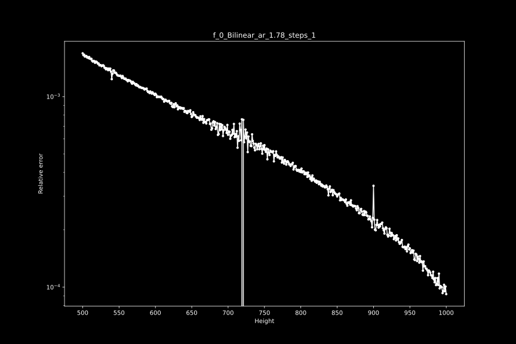
在720p时有一个明显的下降。 我们还可以测试其他内核:
python getnative.py image.png -k bicubic -b 0 -c 1
然后，该图看起来如下:
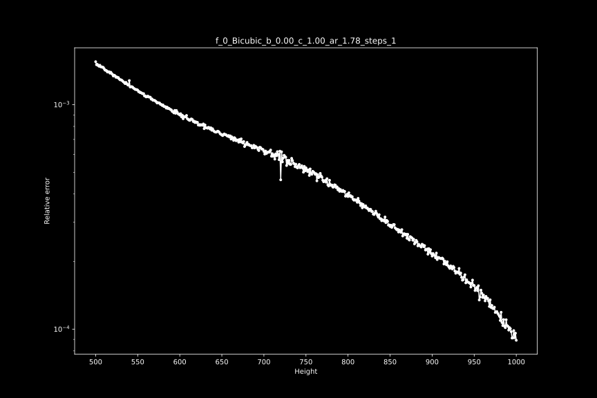
如果你想测试所有可能的内核，你可以使用--mode "all"。
为了仔细检查，我们将输入的帧与用相同内核放大的解放缩进行比较:
descale = fvf.Debilinear(src, 1280, 720)
rescale = descale.resize.Bilinear(src, src.width, src.height)
merge_chroma = rescale.std.Merge(src, [0, 1])
out = core.std.Interleave([src, merge_chroma])
在这里，我们将源头的色度与我们的重新缩放合并起来，因为色度的分辨率比源头的分辨率低，所以我们不能降低它的比例。 结果:

正如你所看到的，线性图实际上是相同的，没有引入额外的光晕或混叠。
另一方面，如果我们尝试一个不正确的内核和分辨率，我们会在重新缩放的图像中看到更多的伪影:
b, c = 0, 1
descale = fvf.Debicubic(src, 1440, 810, b=b, c=c)
rescale = descale.resize.Bicubic(src, src.width, src.height, filter_param_a=b, filter_param_b=c)
merge_chroma = rescale.std.Merge(src, [0, 1])
out = core.std.Interleave([src, merge_chroma])
混合分辨率
上面关于不正确的内核和高度的例子应该很明显，不正确的解放缩是相当有破坏性的。 不幸的是，大多数可以被降级的视频都有其他分辨率的元素。 有时，一帧中的不同元素会有不同的分辨率，例如，背景是900p的，人物A是810p的，人物B是720p的。 在这样的情况下，通常做一个简单的 spline36 调整大小是比较安全的。 从技术上讲，人们可以做大量的遮罩来解决这个问题，但这是一个很大的努力，而且遮罩很可能会失败。
一个更常见的会遇到混合分辨率的情况是片头和叠加，这通常是1080p的。 让我们来看看，如果我们在上面的画面中添加一些文字，并将其与 spline36 调整进行对比，会发生什么。 为了便于比较，这些图片被放大了3倍:

去线性调整在这里明显增加了更强的光晕伪影。
为了处理这个问题，我们可以使用fvsfunc中的DescaleM函数，它掩盖了这些元素，并通过 spline36 调整它们的大小。
descale = fvf.DebilinearM(src, 1280, 720)
由于这些函数相对较慢，你可能要考虑事先找到这些元素，并只对这些帧应用该函数。 如果你不确定你的帧没有1080p元素，但还是坚持使用这些函数。
另外，在非常罕见的情况下，分辨率和/或内核会逐个场景变化，甚至更糟，逐个帧变化。
你可以考虑试试lvsfunc.scale.descale，它试图为每一帧找到理想的高度。
然而，理想的情况是，你应该手动完成这个工作。
4:4:4 and 4:2:0
Upscaling and Rescaling
Upscaling
Rescaling
色度重采样与偏移(Chroma Resampling and Shifting)
位深 Bit Depths: 简介
当你过滤一个画面时，结果被限制在你的比特深度中的可用值。默认情况下，大多数SDR内容为8位，HDR内容为10位。在8位中，你被限制在0和255之间的值。然而，由于大多数视频内容是在有限的范围内，这个范围成为16至235(亮度)和16至240(色度)。
比方说，你想把数值在60到65之间的每个像素提高到0.88的幂。 四舍五入到小数点后3位。
| Original | Raised |
|---|---|
| 60 | 36.709 |
| 61 | 37.247 |
| 62 | 37.784 |
| 63 | 38.319 |
| 64 | 38.854 |
| 65 | 39.388 |
由于我们仅限于 0 到 255 之间的整数值，因此将这些四舍五入为 37、37、38、38、39、39。 因此，虽然过滤器不会导致相同的值，但我们将这些四舍五入为相同的值。 这会导致生成一些不需要的 色带(banding) 。 例如，提高到 8 位的 0.88 次方与 32 位的更高位深度：

为了缓解这种情况，我们在更高的位深度下工作，然后使用所谓的抖动算法在舍入期间添加一些波动并防止产生色带。 通常的位深度是 16 位和 32 位。 虽然 16 位一开始听起来更糟，但差异并不明显，并且 32 位，浮点数而不是整数格式，并不是每个过滤器都支持。
幸运的是，对于那些不在更高位深度下工作的人来说，许多过滤器在内部强制更高的精度并正确地抖动结果。 但是，多次在位深度之间切换会浪费 CPU 周期，并且在极端情况下还会改变图像。
更改位深 Changing bit depths
要在更高的位深度下工作，您可以在脚本filter部分的开头和结尾使用vsutil库中的 depth 方法。
默认情况下，这将使用高质量的抖动算法，并且只需要几次击键：
from vsutil import depth
src = depth(src, 16)
resize = ...
my_great_filter = ...
out = depth(my_great_filter, 8)
当您在更高位深度下工作时，重要的是要记住，某些函数可能需要 8 位的参数输入值，而其他函数则需要输入位深度。 如果您在期望 16 位输入的函数中错误地输入假设为 8 位的 255，您的结果将大不相同，因为 255 是 8 位中较高的值，而在 16 位中，这大致相当于 8位 中的 1。
要转换值，你可以使用vsutil库中的 scale_value方法, 这将有助于处理边缘情况等：
from vsutil import scale_value
v_8bit = 128
v_16bit = scale_value(128, 8, 16)
得到 v_16bit = 32768, 16 位的中间点。
这对于 32 位浮点数并不那么简单，因为您需要指定是否根据范围缩放偏移量以及缩放亮度还是色度。
这是因为有限范围的亮度值介于 0 和 1 之间，而色度值介于 -0.5 和 +0.5 之间。
通常，您将处理电视范围，因此设置 scale_offsets=True:
from vsutil import scale_value
v_8bit = 128
v_32bit_luma = scale_value(128, 8, 32, scale_offsets=True)
v_32bit_chroma = scale_value(128, 8, 32, scale_offsets=True, chroma=True)
得到 v_32bit_luma = 0.5, v_32bit_chroma = 0.
Dither Algorithms
TODO
解带 Debanding
这是人们会遇到的最常见的问题。当码率不足(bitstarving)和糟糕的设置导致平滑的渐变变成突然的颜色变化时，通常会产生色带，这显然会让画面看起来很糟糕。这些可以通过执行类似模糊的操作并限制它们的输出来修复。
请注意，由于模糊是一个非常具有破坏性的过程，因此建议仅将其应用于视频的必要部分并使用 蒙版(masks)来进一步限制更改。
VapourSynth 有三个很棒的工具可以用来修复色带：neo_f3kdb, fvsfunc内置的蒙版 gradfun3 和 vs-placebo的 placebo.Deband。

使用 f3kdb 默认设置修复了色带示例
neo_f3kdb
deband = core.neo_f3kdb.deband(src=clip, range=15, y=64, cb=64, cr=64, grainy=64, grainc=64, dynamic_grain=False, sample_mode=2)
这些设置对某些人来说可能不言自明，但它们的作用如下：
-
src这显然是您的剪辑源。 -
range这指定了用于计算某物是否有条带的像素范围。更大的范围意味着更多的像素用于计算，这意味着它需要更多的处理能力。默认值 15 通常应该没问题。提高此值可能有助于使步长较小的较大梯度看起来更平滑，而较低的值将有助于捕获较小的实例。 -
y最重要的设置，因为大多数（明显的）条带发生在亮度平面上。它指定了亮度平面上的某些东西被认为是色带的差异必须有多大。你应该从低而缓慢的开始，但一定要建立这个直到条带消失。如果设置得太高，很多细节会被视为条带，因此会变得模糊。 根据您的采样模式，值将仅以 16（mode 2）或 32（mode 1、3、4）的步长产生影响。这意味着 y=20 等价于 y=30。 -
cb和cr除了色度外与y都是一样的。 但是，色度平面上的色带相对不常见，因此您通常可以将其关闭。 -
grainy和grainc为了防止色带再次发生并抵消平滑，通常在解带后添加颗粒。但是，由于这种假颗粒非常明显，因此建议保守一些。 或者，您可以使用自定义颗粒生成器，这将为您提供更好的输出 (有关更多信息，请参阅 粒化部分)。 -
dynamic_grain默认情况下，由f3kdb添加的颗粒是静态的，这压缩得更好，因为显然变化较少，但它通常看起来与实况内容无关，因此通常建议将其设置为True，除非您正在处理动画内容。 -
sample_mode在README中有说明。因为它可能具有较少的细节损失，可以考虑切换到 4。
深入讲解
TODOGradFun3
gradfun3是 f3kdb 的最受欢迎替代品。 这个函数需要更多的资源和不那么直接的参数，但在一些 f3kdb 处理不好的地方表现不错:
import fvsfunc as fvf
deband = fvf.GradFun3(src, thr=0.35, radius=12, elast=3.0, mask=2, mode=3, ampo=1, ampn=0, pat=32, dyn=False, staticnoise=False, smode=2, thr_det=2 + round(max(thr - 0.35, 0) / 0.3), debug=False, thrc=thr, radiusc=radius, elastc=elast, planes=list(range(src.format.num_planes)), ref=src, bits=src.format.bits_per_sample) # + resizing variables
fmtconv中许多设置的值都是给位深转换或解放缩使用的, 这两者在这里都不相关。这里真正感兴趣的值是：
-
thr等价于y,cb, 和cr的作用。您可能想要提高或降低它。 -
radius具有和f3kdb的range相同的效果。 -
smode设置平滑模式。通常最好保留默认值，如果您想使用支持 CUDA 的 GPU 而不是 CPU，则设置为 5。使用ref(默认为剪辑输入) 作为参考剪辑。 -
mask设置遮罩强度。 0 禁用。 默认值是一个合理的值。 -
planes置应处理哪些平面。 -
debug允许您查看遮罩。 -
elast控制去色带和剪辑源之间的混合。默认值是一个合理的值。 较高的值优先考虑去色带。
深入讲解
TODO 要更深入地解释 `thr` 和 `elast` 的作用, 请查看mvsfunc的算法解释.
placebo.Deband
这个 debander 对 VapourSynth 来说很新，但它非常擅长修复强条带。然而，同样地，它也容易出现不必要的细节损失，因此应该只在必要时使用，并且最好与细节/边缘蒙版结合使用。它的（当前）参数：
placebo.Deband(clip clip[, int planes = 1, int iterations = 1, float threshold = 4.0, float radius = 16.0, float grain = 6.0, int dither = True, int dither_algo = 0])
这个功能在未来不太可能发生重大变化，因此非常值得读一读 the README 。
您要查看的参数：
-
planes显然是要加工的平面。此处的语法不同，请查看README。简而言之，默认仅对亮度，1 | 2 | 4对亮度和色度。 -
iterations设置 debander 循环的频率。 不建议更改默认设置，尽管这在极端情况下很有用。 -
threshold设置 debander 的强度或更改像素时的阈值。尽量不要超过 12。如果会，请以 1 为步长进行微调。 -
radius与之前的功能相同。 -
grain同样与f3kdb的一样, 但是颗粒更好。
深入讲解
TODO 它使用了 mpv debander，只是平均一个范围内的像素，如果差异低于阈值，则输出平均值。该算法在 中进行了解释.色带检测 Banding detection
如果要自动检测色带，可以使用awsmfunc中的 banddtct 。 确保正确调整值并检查完整输出。查看 此链接 以获取有关如何使用它的说明。您也可以只运行 adptvgrnMod 或用一个高的luma_scaling值来运行 adaptive_grain 以期望颗粒可以完全覆盖它。更多信息在
粒化部分。请注意，这两种方法都无法检测/修复所有类型的色带。 banddtct 找不到被颗粒覆盖的色带，而且用于修复色带的纹理仅适用于较小的实例。
解块 Deblocking

解块相当于平滑输入源，通常是在画面顶部使用另一个蒙版。 最常用的是havsfunc中的 Deblock_QED 函数。
主要参数是
-
quant1: 边缘解块的强度。 默认值为 24。您可能希望显着提高此值。 -
quant2: 内部解块的强度。 默认值为 26。同样，提高此值可能会有益。
深入讲解
TODO其他常用的选项是 deblock.Deblock,它非常强大，几乎总是有效
深入讲解
TODOdfttest.DFTTest, 相对较弱，但非常暴力，还有
fvf.AutoDeblock, 对于 MPEG-2 源的解块非常有用，并且可以应用于整个视频。另一种流行的方法是简单地解带，因为解块和解带非常相似。这对于 AVC 蓝光源是一个不错的选择。
深入讲解
TODOGraining
TODO: explain why we love grain so much and static vs. dynamic grain. Also, images.
Graining Filters
There are a couple different filters you can use to grain. As lots of functions work similarly, we will only cover AddGrain and libplacebo graining.
AddGrain
This plugin allows you to add grain to the luma and chroma grains in differing strengths and grain patterns:
grain = src.grain.Add(var=1.0, uvar=0.0, seed=-1, constant=False)
Here, var controls the grain strength for the luma plane, and uvar controls the strength for the chroma plane.
seed allows you to specify a custom grain pattern, which is useful if you'd like to reproduce a grain pattern multiple times, e.g. for comparing encodes.
constant allows you to choose between static and dynamic grain.
Raising the strength increases both the amount of grain added as well as the offset a grained pixel will have from the original pixel.
For example, var=1 will lead to values being up to 3 8-bit steps away from the input values.
There's no real point in using this function directly, but it's good to know what it does, as it's considered the go-to grainer.
In-depth function explanation
This plugin uses a normal distribution to find the values it changes the input by. The `var` parameter is the standard deviation (usually noted as \(\sigma\)) of the normal distribution.This means that (these are approximations):
- \(68.27\%\) of output pixel values are within \(\pm1\times\mathtt{var}\) of the input value
- \(95.45\%\) of output pixel values are within \(\pm2\times\mathtt{var}\) of the input value
- \(99.73\%\) of output pixel values are within \(\pm3\times\mathtt{var}\) of the input value
- \(50\%\) of output pixel values are within \(\pm0.675\times\mathtt{var}\) of the input value
- \(90\%\) of output pixel values are within \(\pm1.645\times\mathtt{var}\) of the input value
- \(95\%\) of output pixel values are within \(\pm1.960\times\mathtt{var}\) of the input value
- \(99\%\) of output pixel values are within \(\pm2.576\times\mathtt{var}\) of the input value
placebo.Deband as a grainer
Alternatively, using placebo.Deband solely as a grainer can also lead to some nice results:
grain = placebo.Deband(iterations=0, grain=6.0)
The main advantage here is it runs on your GPU, so if your GPU isn't already busy with other filters, using this can get you a slight speed-up.
In-depth function explanation
TODOadaptive_grain
This function from kagefunc applies AddGrain according to overall frame brightness and individual pixel brightness.
This is very useful for covering up minor banding and/or helping x264 distribute more bits to darks.
grain = kgf.adaptive_grain(src, strength=.25, static=True, luma_scaling=12, show_mask=False)
strength here is var from AddGrain.
The default or slightly lower is usually fine.
You likely don't want to go above 0.75.
The luma_scaling parameter is used to control how strong it should favor darker frames over brighter frames, whereby lower luma_scaling will apply more grain to bright frames.
You can use extremely low or extremely high values here depending on what you want.
For example, if you want to grain all frames significantly, you might use luma_scaling=5, while if you just want to apply grain to darker parts of darker frames to cover up minor banding, you might use luma_scaling=100.
show_mask shows you the mask that's used to apply the grain, with whiter meaning more grain is applied.
It's recommended to switch this on when tuning luma_scaling.
In-depth function explanation
The author of the function wrote a fantastic blog post explaining the function and how it works.GrainFactory3
TODO: rewrite this or just remove it.
An older alternative to kgf.adaptive_grain, havsfunc's GrainFactory3 is still quite interesting.
It splits pixel values into four groups based on their brightness and applies differently sized grain at different strengths via AddGrain to these groups.
grain = haf.GrainFactory3(src, g1str=7.0, g2str=5.0, g3str=3.0, g1shrp=60, g2shrp=66, g3shrp=80, g1size=1.5, g2size=1.2, g3size=0.9, temp_avg=0, ontop_grain=0.0, th1=24, th2=56, th3=128, th4=160)
The parameters are explained above the source code.
This function is mainly useful if you want to apply grain to specific frames only, as overall frame brightness should be taken into account if grain is applied to the whole video.
For example, GrainFactory3 to make up for missing grain on left and right borders:

In-depth function explanation
TODOIn short: Create a mask for each brightness group, use bicubic resizing with sharpness controlling b and c to resize the grain, then apply that. Temporal averaging just averages the grain for the current frame and its direct neighbors using misc.AverageFrames.
adptvgrnMod
This function resizes grain in the same way GrainFactory3 does, then applies it using the method from adaptive_grain.
It also has some protection for darks and brights to maintain average frame brightness:
grain = agm.adptvgrnMod(strength=0.25, cstrength=None, size=1, sharp=50, static=False, luma_scaling=12, seed=-1, show_mask=False)
Grain strength is controlled by strength for luma and cstrength for chroma.
cstrength defaults to half of strength.
Just like adaptive_grain, the default or slightly lower is usually fine, but you shouldn't go too high.
If you're using a size greater than the default, you can get away with higher values, e.g. strength=1, but it's still advised to stay conservative with grain application.
The size and sharp parameters allow you to make the applied grain look a bit more like the rest of the film's.
It's recommended to play around with these so that fake grain isn't too obvious.
In most cases, you will want to raise both of them ever so slightly, e.g. size=1.2, sharp=60.
static, luma_scaling, and show_mask are equivalent to adaptive_grain, so scroll up for explanations.
seed is the same as AddGrain's; again, scroll up.
By default, adptvgrnMod will fade grain around extremes (16 or 235) and shades of gray.
These features can be turned off by setting fade_edges=False and protect_neutral=False respectively.
It's recently become common practice to remove graining entirely from one's debander and grain debanded areas entirely with this function.
sizedgrn
If one wants to disable the brightness-based application, one can use sizedgrn, which is the internal graining function in adptvgrnMod.
Some examples of adptvgrnMod compared with sizedgrn for those curious
A bright scene, where the brightness-based application makes a large difference:

An overall darker scene, where the difference is a lot smaller:

A dark scene, where grain is applied evenly (almost) everywhere in the frame:

In-depth function explanation
(Old write-up from the function's author.)Size and Sharpness
The graining part of adptvgrnMod is the same as GrainFactory3's; it creates a "blank" (midway point of bit depth) clip at a resolution defined by the size parameter, then scales that via a bicubic kernel that uses b and c values determined by sharp:
$$\mathrm{grain\ width} = \mathrm{mod}4 \left( \frac{\mathrm{clip\ width}}{\mathrm{size}} \right)$$
For example, with a 1920x1080 clip and a size value of 1.5:
$$ \mathrm{mod}4 \left( \frac{1920}{1.5} \right) = 1280 $$
This determines the size of the frame the grainer operates on.
Now, the bicubic kernel's parameters are determined:
$$ b = \frac{\mathrm{sharp}}{-50} + 1 $$ $$ c = \frac{1 - b}{2} $$
This means that for the default sharp of 50, a Catmull-Rom filter is used:
$$ b = 0, \qquad c = 0.5 $$
Values under 50 will tend towards B-Spline (b=1, c=0), while ones above 50 will tend towards b=-1, c=1. As such, for a Mitchell (b=1/3, c=1/3) filter, one would require sharp of 100/3.
The grained "blank" clip is then resized to the input clip's resolution with this kernel. If size is greater than 1.5, an additional resizer call is added before the upscale to the input resolution:
$$ \mathrm{pre\ width} = \mathrm{mod}4 \left( \frac{\mathrm{clip\ width} + \mathrm{grain\ width}}{2} \right) $$
With our resolutions so far (assuming we did this for size 1.5), this would be 1600. This means with size 2, where this preprocessing would actually occur, our grain would go through the following resolutions:
$$ 960 \rightarrow 1440 \rightarrow 1920 $$
Fade Edges
The fade_edges parameter introduces the option to attempt to maintain overall average image brightness, similar to ideal dithering. It does so by limiting the graining at the edges of the clip's range. This is done via the following expression:
x y neutral - abs - low < x y neutral - abs + high > or
x y neutral - x + ?
Here, x is the input clip, y is the grained clip, neutral is the midway point from the previously grained clip, and low and high are the edges of the range (e.g. 16 and 235 for 8-bit luma). Converted from postfix to infix notation, this reads:
\[x = x\ \mathtt{if}\ x - \mathrm{abs}(y - neutral) < low\ \mathtt{or}\ x - \mathrm{abs}(y - neutral) > high\ \mathtt{else}\ x + (y - neutral)\]
The effect here is that all grain that wouldn't be clipped during output regardless of whether it grains in a positive or negative direction remains, while grain that would pass the plane's limits isn't taken.
In addition to this parameter, protect_neutral is also available. This parameter protects "neutral" chroma (i.e. chroma for shades of gray) from being grained. To do this, it takes advantage of AddGrainC working according to a Guassian distribution, which means that $$max\ value = 3 \times \sigma$$ (sigma being the standard deviation - the strength or cstrength parameter) is with 99.73% certainty the largest deviated value from the norm (0). This means we can perform a similar operation to the one for fade_edges to keep the midways from being grained. To do this, we resize the input clip to 4:4:4 and use the following expression:
\[\begin{align}x \leq (low + max\ value)\ \mathtt{or}\ x \geq (high - max\ value)\ \mathtt{and}\\ \mathrm{abs}(y - neutral) \leq max\ value\ \mathtt{and}\ \mathrm{abs}(z - neutral) \leq max\ value \end{align}\]
With x, y, z being each of the three planes. If the statement is true, the input clip is returned, else the grained clip is returned.
I originally thought the logic behind protect_neutral would also work well for fade_edges, but I then realized this would completely remove grain near the edges instead of fading it.
Now, the input clip and grained clip (which was merged via std.MergeDiff, which is x - y - neutral) can be merged via the adaptive_grain mask.

来自 A Silent Voice (2016)的前奏的脏线。鼠标移上去: 用ContinuityFixer和FillBorders修复。
你可能会遇到的一个更常见的问题是 "脏线"，这通常是在视频的边界上发现的，其中一排或一列的像素表现出与周围环境不一致的亮度值。通常情况下，这是由于不当的downscaling，例如在添加边框后downscaling。脏线也可能发生，因为压缩者没有考虑到他们在使用4:2:2色度子采样时（意味着他们的高度不必是mod2），消费者的视频将是4:2:0，导致额外的黑行，如果主片段没有正确放置，你就无法在裁剪时摆脱。另一种形式的脏线是在黑条上出现色度平面时表现出来的。通常情况下，这些应该被裁剪掉。然而，相反的情况也可能发生，即具有合法的 luma 信息的平面缺乏色度信息。
重要的是要记住，有时你的来源会有假行（通常被称为 "死"行），也就是没有合法信息的行。这些通常只是镜像下一行/一列。不要麻烦地修复这些，只需裁剪它们。一个例子:

同样，当你试图修复脏线时，你应该彻底检查你的修复没有引起不必要的问题，如涂抹（常见于过度热心的ContinuityFixer值）或闪烁（特别是在片头，在大多数情况下，建议从你的修复中省略片头卷）。如果你不能找出适当的修复方法，完全可以裁剪掉脏线或不修复。糟糕的修复比没有修复更糟糕
这里有五种常用的修复脏线的方法:
rektlvls
来自rekt。这基本上是AviSynth的 FixBrightnessProtect3 和 FixBrightness 的合二为一，尽管与 FixBrightness 不同，不是对整个画面进行处理。它的数值很直接。提高调整值是为了变亮，降低是为了变暗。将prot_val设置为None，它的功能就像FixBrightness，意味着调整值需要改变。
from rekt import rektlvls
fix = rektlvls(src, rownum=None, rowval=None, colnum=None, colval=None, prot_val=[16, 235])
如果你想一次处理多行，你可以输入一个列表 (例如 rownum=[0, 1, 2]).
为了说明这一点，让我们看看《寄生虫》（2017）的黑白蓝光中的脏线。寄生虫（2019）的底层行的黑白蓝光:

在这个例子中，最下面的四行有交替的亮度 与下两行的偏移量。所以，我们可以用rektlvls来提高 提高第一行和第三行的luma，然后再降低第二行和第四行的luma。在第二和第四行中降低。
fix = rektlvls(src, rownum=[803, 802, 801, 800], rowval=[27, -10, 3, -3])
在这种情况下，我们处于FixBrightnessProtect3模式。我们在这里没有利用prot_val的优势，但人们通常会使用这种模式，因为总有机会帮助我们。结果是:

深入功能讲解
InFixBrightness mode, this will perform an adjustment with
std.Levels on the desired row. This means that, in 8-bit,
every possible value \(v\) is mapped to a new value according to the
following function:
$$\begin{aligned}
&\forall v \leq 255, v\in\mathbb{N}: \\
&\max\left[\min\left(\frac{\max(\min(v, \texttt{max_in}) - \texttt{min_in}, 0)}{(\texttt{max_in} - \texttt{min_in})}\times (\texttt{max_out} - \texttt{min_out}) + \texttt{min_out}, 255\right), 0\right] + 0.5
\end{aligned}$$
For positive adj_val,
\(\texttt{max_in}=235 - \texttt{adj_val}\). For negative ones,
\(\texttt{max_out}=235 + \texttt{adj_val}\). The rest of the values
stay at 16 or 235 depending on whether they are maximums or
minimums.
FixBrightnessProtect3 mode takes this a bit further, performing
(almost) the same adjustment for values between the first
\(\texttt{prot_val} + 10\) and the second \(\texttt{prot_val} - 10\),
where it scales linearly. Its adjustment value does not work the
same, as it adjusts by \(\texttt{adj_val} \times 2.19\). In 8-bit:
Line brightening: $$\begin{aligned} &\texttt{if }v - 16 <= 0 \\ &\qquad 16 / \\ &\qquad \texttt{if } 235 - \texttt{adj_val} \times 2.19 - 16 <= 0 \\ &\qquad \qquad 0.01 \\ &\qquad \texttt{else} \\ &\qquad \qquad 235 - \texttt{adj_val} \times 2.19 - 16 \\ &\qquad \times 219 \\ &\texttt{else} \\ &\qquad (v - 16) / \\ &\qquad \texttt{if }235 - \texttt{adj_val} \times 2.19 - 16 <= 0 \\ &\qquad \qquad 0.01 \\ &\qquad \texttt{else} \\ &\qquad \qquad 235 - \texttt{adj_val} \times 2.19 - 16 \\ &\qquad \times 219 + 16 \end{aligned}$$
Line darkening: $$\begin{aligned} &\texttt{if }v - 16 <= 0 \\ &\qquad\frac{16}{219} \times (235 + \texttt{adj_val} \times 2.19 - 16) \\ &\texttt{else} \\ &\qquad\frac{v - 16}{219} \times (235 + \texttt{adj_val} \times 2.19 - 16) + 16 \\ \end{aligned}$$
All of this, which we give the variable \(a\), is then protected by (for simplicity's sake, only doing dual prot_val, noted by \(p_1\) and \(p_2\)):
$$\begin{aligned}
& a \times \min \left[ \max \left( \frac{v - p_1}{10}, 0 \right), 1 \right] \\
& + v \times \min \left[ \max \left( \frac{v - (p_1 - 10)}{10}, 0 \right), 1 \right] \times \min \left[ \max \left( \frac{p_0 - v}{-10}, 0\right), 1 \right] \\
& + v \times \max \left[ \min \left( \frac{p_0 + 10 - v}{10}, 0\right), 1\right]
\end{aligned}$$
bbmod
来自awsmfunc。 这是原BalanceBorders函数的一个模子。虽然它不能像rektlvls'那样保留原始数据，但在高blur'和thresh'值的情况下，它可以产生很好的结果，而且很容易用于多行，特别是具有不同亮度的行，rektlvls'就不再有用。如果它不能产生像样的结果，可以改变这些值，但是你设置得越低，这个函数的破坏性就越大。它也比havsfunc和sgvsfunc中的版本快得多，因为只有必要的像素被处理。
import awsmfunc as awf
bb = awf.bbmod(src=clip, left=0, right=0, top=0, bottom=0, thresh=[128, 128, 128], blur=[20, 20, 20], planes=[0, 1, 2], scale_thresh=False, cpass2=False)
The arrays for thresh and blur are again y, u, and v values.
It's recommended to try blur=999 first, then lowering that and
thresh until you get decent values.
thresh specifies how far the result can vary from the input. This
means that the lower this is, the better. blur is the strength of
the filter, with lower values being stronger, and larger values
being less aggressive. If you set blur=1, you're basically copying
rows. If you're having trouble with chroma, you can try activating
cpass2, but note that this requires a very low thresh to be set,
as this changes the chroma processing significantly, making it quite
aggressive.
For our example, I've created fake dirty lines, which we will fix:

To fix this, we can apply bbmod with a low blur and a high thresh,
meaning pixel values can change significantly:
fix = awf.bbmod(src, top=6, thresh=90, blur=20)

Our output is already a lot closer to what we assume the source
should look like. Unlike rektlvls, this function is quite quick to
use, so lazy people (i.e. everyone) can use this to fix dirty lines
before resizing, as the difference won't be noticeable after
resizing.
While you can use rektlvls on as many rows/columns as necessary, the same doesn't hold true for bbmod. Unless you are resizing after, you should only use bbmod on two rows/pixels for low blur values (\(\approx 20\)) or three for higher blur values. If you are resizing after, you can change the maximum value according to:
\[
max_\mathrm{resize} = max \times \frac{resolution_\mathrm{source}}{resolution_\mathrm{resized}}
\]
In-depth function explanation
bbmod works by blurring the desired rows, input rows, and
reference rows within the image using a blurred bicubic kernel,
whereby the blur amount determines the resolution scaled to accord
to \(\mathtt{\frac{width}{blur}}\). The output is compared using
expressions and finally merged according to the threshold specified.
The function re-runs one function for the top border for each side by flipping and transposing. As such, this explanation will only cover fixing the top.
First, we double the resolution without any blurring (\(w\) and \(h\) are input clip's width and height): \[ clip_2 = \texttt{resize.Point}(clip, w\times 2, h\times 2) \]

Now, the reference is created by cropping off double the to-be-fixed number of rows. We set the height to 2 and then match the size to the double res clip: \[\begin{align} clip &= \texttt{CropAbs}(clip_2, \texttt{width}=w \times 2, \texttt{height}=2, \texttt{left}=0, \texttt{top}=top \times 2) \\ clip &= \texttt{resize.Point}(clip, w \times 2, h \times 2) \end{align}\]

Before the next step, we determine the \(blurwidth\): \[ blurwidth = \max \left( 8, \texttt{floor}\left(\frac{w}{blur}\right)\right) \] In our example, we get 8.
Now, we use a blurred bicubic resize to go down to \(blurwidth \times 2\) and back up: \[\begin{align} referenceBlur &= \texttt{resize.Bicubic}(clip, blurwidth \times 2, top \times 2, \texttt{b}=1, \texttt{c}=0) \\ referenceBlur &= \texttt{resize.Bicubic}(referenceBlur, w \times 2, top \times 2, \texttt{b}=1, \texttt{c}=0) \end{align}\]


Then, crop the doubled input to have height of \(top \times 2\): \[ original = \texttt{CropAbs}(clip_2, \texttt{width}=w \times 2, \texttt{height}=top \times 2) \]

Prepare the original clip using the same bicubic resize downwards: \[ clip = \texttt{resize.Bicubic}(original, blurwidth \times 2, top \times 2, \texttt{b}=1, \texttt{c}=0) \]

Our prepared original clip is now also scaled back down: \[ originalBlur = \texttt{resize.Bicubic}(clip, w \times 2, top \times 2, \texttt{b}=1, \texttt{c}=0) \]

Now that all our clips have been downscaled and scaled back up, which is the blurring process that approximates what the actual value of the rows should be, we can compare them and choose how much of what we want to use. First, we perform the following expression (\(x\) is \(original\), \(y\) is \(originalBlur\), and \(z\) is \(referenceBlur\)): \[ \max \left[ \min \left( \frac{z - 16}{y - 16}, 8 \right), 0.4 \right] \times (x + 16) + 16 \] The input here is: \[ balancedLuma = \texttt{Expr}(\texttt{clips}=[original, originalBlur, referenceBlur], \texttt{"z 16 - y 16 - / 8 min 0.4 max x 16 - * 16 +"}) \]

What did we do here? In cases where the original blur is low and supersampled reference's blur is high, we did: \[ 8 \times (original + 16) + 16 \] This brightens the clip significantly. Else, if the original clip's blur is high and supersampled reference is low, we darken: \[ 0.4 \times (original + 16) + 16 \] In normal cases, we combine all our clips: \[ (original + 16) \times \frac{originalBlur - 16}{referenceBlur - 16} + 16 \]
We add 128 so we can merge according to the difference between this and our input clip: \[ difference = \texttt{MakeDiff}(balancedLuma, original) \]
Now, we compare to make sure the difference doesn't exceed \(thresh\): \[\begin{align} difference &= \texttt{Expr}(difference, "x thresh > thresh x ?") \\ difference &= \texttt{Expr}(difference, "x thresh < thresh x ?") \end{align}\]
These expressions do the following: \[\begin{align} &\texttt{if }difference >/< thresh:\\ &\qquad thresh\\ &\texttt{else}:\\ &\qquad difference \end{align}\]
This is then resized back to the input size and merged using MergeDiff back into the original and the rows are stacked onto the input. The output resized to the same res as the other images:

FillBorders
From fb. This function pretty much just copies the next column/row in line.
While this sounds, silly, it can be quite useful when downscaling
leads to more rows being at the bottom than at the top, and one
having to fill one up due to YUV420's mod2 height.
fill = core.fb.FillBorders(src=clip, left=0, right=0, bottom=0, top=0, mode="fixborders")
A very interesting use for this function is one similar to applying
ContinuityFixer only to chroma planes, which can be used on gray
borders or borders that don't match their surroundings no matter
what luma fix is applied. This can be done with the following
script:
fill = core.fb.FillBorders(src=clip, left=0, right=0, bottom=0, top=0, mode="fixborders")
merge = core.std.Merge(clipa=clip, clipb=fill, weight=[0,1])
You can also split the planes and process the chroma planes
individually, although this is only slightly faster. A wrapper that
allows you to specify per-plane values for fb is FillBorders in
awsmfunc.
Note that you should only ever fill single columns/rows with FillBorders. If you have more black lines, crop them! If there are frames requiring different crops in the video, don't fill these up. More on this at the end of this chapter.
To illustrate what a source requiring FillBorders might look like,
let's look at Parasite (2019)'s SDR UHD once again, which requires
an uneven crop of 277. However, we can't crop this due to chroma
subsampling, so we need to fill one row. To illustrate this, we'll
only be looking at the top rows. Cropping with respect to chroma
subsampling nets us:
crp = src.std.Crop(top=276)

Obviously, we want to get rid of the black line at the top, so let's
use FillBorders on it:
fil = crp.fb.FillBorders(top=1, mode="fillmargins")

This already looks better, but the orange tones look washed out.
This is because FillBorders only fills one chroma if two luma
are fixed. So, we need to fill chroma as well. To make this easier
to write, let's use the awsmfunc wrapper:
fil = awf.fb(crp, top=1)

Our source is now fixed. Some people may want to resize the chroma to maintain original aspect ratio performing lossy resampling on chroma, but whether this is the way to go is not generally agreed upon. If you want to go this route:
top = 1
bot = 1
new_height = crp.height - (top + bot)
fil = awf.fb(crp, top=top, bottom=bot)
out = fil.resize.Spline36(crp.width, new_height, src_height=new_height, src_top=top)
In-depth function explanation
FillBorders has four modes, although we only really care about mirror, fillmargins, and fixborders.
The mirror mode literally just mirrors the previous pixels. Contrary to the third mode, repeat, it doesn't just mirror the final row, but the rows after that for fills greater than 1. This means that, if you only fill one row, these modes are equivalent. Afterwards, the difference becomes obvious.
In fillmargins mode, it works a bit like a convolution, whereby for rows it does a [2, 3, 2] of the next row's pixels, meaning it takes 2 of the left pixel, 3 of the middle, and 2 of the right, then averages. For borders, it works slightly differently: the leftmost pixel is just a mirror of the next pixel, while the eight rightmost pixels are also mirrors of the next pixel. Nothing else happens here.
The fixborders mode is a modified fillmargins that works the same for rows and columns. It compares fills with emphasis on the left, middle, and right with the next row to decide which one to use.
ContinuityFixer
From cf. ContinuityFixer works by comparing the rows/columns specified to
the amount of rows/columns specified by range around it and
finding new values via least squares regression. Results are similar
to bbmod, but it creates entirely fake data, so it's preferable to
use rektlvls or bbmod with a high blur instead. Its settings
look as follows:
fix = core.cf.ContinuityFixer(src=clip, left=[0, 0, 0], right=[0, 0, 0], top=[0, 0, 0], bottom=[0, 0, 0], radius=1920)
This is assuming you're working with 1080p footage, as radius's
value is set to the longest set possible as defined by the source's
resolution. I'd recommend a lower value, although not going much
lower than 3, as at that point, you may as well be copying pixels
(see FillBorders below for that). What will probably throw off
most newcomers is the array I've entered as the values for
rows/columns to be fixed. These denote the values to be applied to
the three planes. Usually, dirty lines will only occur on the luma
plane, so you can often leave the other two at a value of 0. Do note
an array is not necessary, so you can also just enter the amount of
rows/columns you'd like the fix to be applied to, and all planes
will be processed.
As ContinuityFixer is less likely to keep original data in tact, it's recommended to prioritize bbmod over it.
Let's look at the bbmod example again and apply ContinuityFixer:
fix = src.cf.ContinuityFixer(top=[6, 6, 6], radius=10)

Let's compare this with the bbmod fix (remember to mouse-over to compare):
ContinuityFixer here.
This will rarely be the case, as `ContinuityFixer` tends to be more destructive
than `bbmod` already is.
Just like bbmod, ContinuityFixer shouldn't be used on more than two rows/columns. Again, if you're resizing, you can change this maximum accordingly:
\[
max_\mathrm{resize} = max \times \frac{resolution_\mathrm{source}}{resolution_\mathrm{resized}}
\]
In-depth function explanation
ContinuityFixer works by calculating the least squares
regression of the pixels within the radius. As such, it creates
entirely fake data based on the image's likely edges. No special explanation here.
ReferenceFixer
From edgefixer. This requires the original version of edgefixer (cf is just an
old port of it, but it's nicer to use and processing hasn't
changed). I've never found a good use for it, but in theory, it's
quite neat. It compares with a reference clip to adjust its edge fix
as in ContinuityFixer.:
fix = core.edgefixer.Reference(src, ref, left=0, right=0, top=0, bottom=0, radius = 1920)
Notes
Too many rows/columns
One thing that shouldn't be ignored is that applying these fixes (other
than rektlvls) to too many rows/columns may lead to these looking
blurry on the end result. Because of this, it's recommended to use
rektlvls whenever possible or carefully apply light fixes to only the
necessary rows. If this fails, it's better to try bbmod before using
ContinuityFixer.
Resizing
It's important to note that you should always fix dirty lines before
resizing, as not doing so will introduce even more dirty lines. However,
it is important to note that, if you have a single black line at an edge
that you would use FillBorders on, you should remove that using your
resizer.
For example, to resize a clip with a single filled line at the top to \(1280\times536\) from \(1920\times1080\):
top_crop = 138
bot_crop = 138
top_fill = 1
bot_fill = 0
src_height = src.height - (top_crop + bot_crop) - (top_fill + bot_fill)
crop = core.std.Crop(src, top=top_crop, bottom=bot_crop)
fix = core.fb.FillBorders(crop, top=top_fill, bottom=bot_fill, mode="fillmargins")
resize = core.resize.Spline36(1280, 536, src_top=top_fill, src_height=src_height)
Diagonal borders
If you're dealing with diagonal borders, the proper approach here is to
mask the border area and merge the source with a FillBorders call. An
example of this (from the Your Name (2016)):

Fix compared with unmasked in fillmargins mode and contrast adjusted for clarity:

Code used (note that this was detinted after):
mask = core.std.ShufflePlanes(src, 0, vs.GRAY).std.Binarize(43500)
cf = core.fb.FillBorders(src, top=6, mode="mirror").std.MaskedMerge(src, mask)
Finding dirty lines
Dirty lines can be quite difficult to spot. If you don't immediately spot any upon examining borders on random frames, chances are you'll be fine. If you know there are frames with small black borders on each side, you can use something like the following script:
def black_detect(clip, thresh=None):
if thresh:
clip = core.std.ShufflePlanes(clip, 0, vs.GRAY).std.Binarize(
"{0}".format(thresh)).std.Invert().std.Maximum().std.Inflate( ).std.Maximum().std.Inflate()
l = core.std.Crop(clip, right=clip.width / 2)
r = core.std.Crop(clip, left=clip.width / 2)
clip = core.std.StackHorizontal([r, l])
t = core.std.Crop(clip, top=clip.height / 2)
b = core.std.Crop(clip, bottom=clip.height / 2)
return core.std.StackVertical([t, b])
This script will make values under the threshold value (i.e. the black
borders) show up as vertical or horizontal white lines in the middle on
a mostly black background. If no threshold is given, it will simply
center the edges of the clip. You can just skim through your video with
this active. An automated alternative would be dirtdtct, which scans
the video for you.
Other kinds of variable dirty lines are a bitch to fix and require checking scenes manually.
Variable borders
An issue very similar to dirty lines is unwanted borders. During scenes with different crops (e.g. IMAX or 4:3), the black borders may sometimes not be entirely black, or be completely messed up. In order to fix this, simply crop them and add them back. You may also want to fix dirty lines that may have occurred along the way:
crop = core.std.Crop(src, left=100, right=100)
clean = core.cf.ContinuityFixer(crop, left=2, right=2, top=0, bottom=0, radius=25)
out = core.std.AddBorders(clean, left=100, right=100)
If you're resizing, you should crop these off before resizing, then add the borders back, as leaving the black bars in during the resize will create dirty lines:
crop = src.std.Crop(left=100, right=100)
clean = crop.cf.ContinuityFixer(left=2, right=2, top=2, radius=25)
resize = awf.zresize(clean, preset=720)
border_size = (1280 - resize.width) / 2
bsize_mod2 = border_size % 2
out = resize.std.AddBorders(left=border_size - bsize_mod2, right=border_size + bsize_mod2)
In the above example, we have to add more to one side than the other to reach our desired width. Ideally, your border_size will be mod2 and you won't have to do this.
If you know you have borders like these, you can use brdrdtct from awsmfunc similarly to dirtdtct to scan the file for them.
0.88伽马的错误
如果你有两个信号源，其中一个明显比另一个亮，那么你的亮的信号源有可能是受到了所谓的伽马缺陷的影响。 如果是这种情况，请执行以下操作（针对16位），看看是否能解决这个问题:
out = core.std.Levels(src, gamma=0.88, min_in=4096, max_in=60160, min_out=4096, max_out=60160, planes=0)

不要在低位深度下执行这一操作。较低的比特深度可能并将导致色带。
深入解释
这个错误似乎源于苹果软件。 这篇博文是人们在网上可以找到的关于这个错误的少数提及之一。其原因可能是软件不必要地试图在NTSC伽马（2.2）和PC伽马（2.5）之间进行转换，因为 \(\frac{2.2}{2.5}=0.88\).
为了解决这个问题，每个值都必须提高到0.88的幂，尽管必须进行电视范围标准化:
\[ v_\mathrm{new} = \left( \frac{v - min_\mathrm{in}}{max_\mathrm{in} - min_\mathrm{in}} \right) ^ {0.88} \times (max_\mathrm{out} - min_\mathrm{out}) + min_\mathrm{out} \]
对于那些好奇伽马虫源和源会有什么不同的人来说：除了16、232、233、234和235以外的所有数值都是不同的，最大和最常见的差异是10，从63持续到125。 由于可以打出同等数量的数值，而且该操作通常是在高比特深度下进行的，因此显著的细节损失是不太可能的。 然而，请注意，无论比特深度如何，这都是一个有损失的过程。
你也可以使用awsmfunc中的fixlvls封装库，在32位精度下轻松完成这个任务。
双重范围压缩
一个类似的问题是双范围压缩。 当这种情况发生时，luma值会在30和218之间。 这可以通过以下方法轻松解决:
out = src.resize.Point(range_in=0, range=1, dither_type="error_diffusion")
out = out.std.SetFrameProp(prop="_ColorRange", intval=1)

深入解释
这个问题意味着在编码过程中，某些东西或某些人假定输入是全范围的，尽管它已经是有限范围的。 由于最终的结果通常是有限的范围，这个感知的问题被 "修复 "了。实际上，我们也可以在std.Levels中做完全相同的事情。 以下是应用于改变范围的数学方法:
\[ v_\mathrm{new} = \left( \frac{v - min_\mathrm{in}}{max_\mathrm{in} - min_\mathrm{in}} \right) \times (max_\mathrm{out} - min_\mathrm{out}) + min_\mathrm{out} \]
对于范围压缩，使用以下数值: \[ min_\mathrm{in} = 0 \qquad max_\mathrm{in} = 255 \qquad min_\mathrm{out} = 16 \qquad max_\mathrm{out} = 235 \]
由于zlib调整器在内部使用32位精度来执行这个，所以最简单的就是使用这些。 然而，这些将改变文件的_ColorRange属性，因此需要使用std.SetFrameProp:
其他不正确的层级
一个密切相关的问题是其他不正确的层级。要解决这个问题，最好是使用一个具有正确层级的参考源，找到与16和235相当的值，然后从那里进行调整（为了清楚起见，在更高的比特深度中这样做）:
out = src.std.Levels(min_in=x, min_out=16, max_in=y, max_out=235)
然而，这通常是不可能的。 相反，我们可以做以下数学运算来计算出正确的调整值: \[ v = \frac{v_\mathrm{new} - min_\mathrm{out}}{max_\mathrm{out} - min_\mathrm{out}} \times (max_\mathrm{in} - min_\mathrm{in}) + min_\mathrm{in} \]
因此，我们可以从要调整的源中选择任何低值，将其设置为 \(min_\mathrm{in}\)，在参考源中选择同一像素的值作为 \(min_\mathrm{out}\)。对于高值和最大值，我们也是这样做的。然后, 我们用16和235来计算 (再次，最好是高位深度--16位的4096和60160，32位浮动的0和1等等。) 这个 \(v_\mathrm{new}\) ，输出值将是上面VapourSynth代码中我们的 \(x\) 和 \(y\)。
为了说明这一点，让我们使用《燃烧》（2018）的德国和美国蓝光片。 美国的蓝光有正确的水平，而德国的蓝光有不正确的水平。

这里德国的高值是199，而美国的相同像素是207。 对于低值，我们可以找到29和27。 通过这些，我们得到18.6和225.4。 对更多的像素和不同的帧进行这些操作，然后取其平均值，我们得到19和224。 用这些值来调整luma，使我们更接近参考视频的1。

深入解释
看过前面解释的人应该认识到这个函数，因为它是用于水平调整的函数的逆向函数。 我们只需把它反过来，把我们的期望值设为 \(v_\mathrm{new}\)并进行计算。不恰当的颜色矩阵
如果你有一个不恰当的颜色矩阵的信号源，你可以用以下方法解决这个问题 用以下方法解决。
out = core.resize.Point(src, matrix_in_s='470bg', matrix_s='709')
'470bg'也就是被称为601的东西。要知道你是否应该这样做，你需要一些参考来源，最好不是网络来源。从技术上讲，你可以识别坏的颜色，并意识到有必要改变矩阵，但在这种情况下，人们应该非常确定。

深入解释
颜色矩阵定义了YCbCr和RGB之间的转换是如何进行的。 由于RGB自然没有任何子采样，剪辑首先从4:2:0转换为4:4:4，然后从YCbCr转换为RGB，然后再进行还原。 在YCbCr到RGB的转换过程中，我们假设是Rec.601矩阵系数，而在转换回来的过程中，我们指定是Rec.709。之所以很难知道是否假设了不正确的标准，是因为两者涵盖了CIE 1931的类似范围。 色度图应使这一点很明显（包括Rec.2020作为参考）:

四舍五入错误
一个轻微的绿色色调可能表明发生了舍入错误。 为了解决这个问题，我们需要在比源文件更高的比特深度上增加半步。
high_depth = vsutil.depth(src, 16)
half_step = high_depth.std.Expr("x 128 +")
out = vsutil.depth(half_step, 8)

另外，可以使用lvsfunc.misc.fix_cr_tint代替。
它的默认值与上述内容相当。
深入解释
当工作室从他们的10位母版变成8位时，他们的软件可能总是向下四舍五入（例如1.9会被四舍五入为1）。 我们解决这个问题的方法只是增加了一个8位的半步，如（0.5乘以2 ^ {16 - 8} = 128\）除着色
请注意，只有在其他方法都失败的情况下，你才应该采用这种方法。
如果你有一个较好的带色调的源，和一个较差的不带色调的源，你想把它去掉，你可以通过timecube和DrDre's Color Matching Tool2来实现。首先，在该工具中添加两张参考截图，导出LUT，保存它，并通过类似的方式添加它:
clip = core.resize.Point(src, matrix_in_s="709", format=vs.RGBS)
detint = core.timecube.Cube(clip, "LUT.cube")
out = core.resize.Point(detint, matrix=1, format=vs.YUV420P16, dither_type="error_diffusion")

为了简单起见，这里没有触及色度平面。 这些需要做的工作远远多于luma平面，因为很难找到非常鲜艳的颜色，尤其是像这样的截图。
令人遗憾的是，这个程序是闭源的。 我不知道有什么替代品。
this needs to be reformatted
Masking is a less straightforward topic. The idea is to limit the application of filters according to the source image's properties. A mask will typically be grayscale, whereby how much of the two clips in question are applied is determined by the mask's brightness. So, if you do
mask = mask_function(src)
filtered = filter_function(src)
merge = core.std.MaskedMerge(src, filtered, mask)
The filtered clip will be used for every completely white pixel in
mask, and the src clip for every black pixel, with in-between values
determining the ratio of which clip is applied. Typically, a mask will
be constructed using one of the following three functions:
-
std.Binarize: This simply separates pixels by whether they are above or below a threshold and sets them to black or white accordingly. -
std.Expr: Known to be a very complicated function. Applies logic via reverse Polish notation. If you don't know what this is, read up on Wikipedia. Some cool things you can do with this are make some pixels brighter while keeping others the same (instead of making them dark as you would withstd.Binarize):std.Expr("x 2000 > x 10 * x ?"). This would multiply every value above 2000 by ten and leave the others be. One nice use case is for in between values:std.Expr("x 10000 > x 15000 < and x {} = x 0 = ?".format(2**src.format.bits_per_sample - 1)).
This makes every value between 10 000 and 15 000 the maximum value allowed by the bit depth and makes the rest zero, just like how astd.Binarizemask would. Many other functions can be performed via this. -
std.Convolution: In essence, apply a matrix to your pixels. The documentation explains it well, so just read that if you don't get it. Lots of masks are defined via convolution kernels. You can use this to do a whole lot of stuff. For example, if you want to average all the values surrounding a pixel, dostd.Convolution([1, 1, 1, 1, 0, 1, 1, 1, 1]). To illustrate, let's say you have a pixel with the value \(\mathbf{1}\) with the following \(3\times3\) neighborhood:\[\begin{bmatrix} 0 & 2 & 4 \\ 6 & \mathbf{1} & 8 \\ 6 & 4 & 2 \end{bmatrix}\]
Now, let's apply a convolution kernel:
\[\begin{bmatrix} 2 & 1 & 3 \\ 1 & 0 & 1 \\ 4 & 1 & 5 \end{bmatrix}\]
This will result in the pixel 1 becoming: \[\frac{1}{18} \times (2 \times 0 + 1 \times 2 + 3 \times 4 + 1 \times 6 + 0 \times \mathbf{1} + 1 \times 8 + 4 \times 6 + 1 \times 4 + 5 \times 2) = \frac{74}{18} \approx 4\]
So, let's say you want to perform what is commonly referred to as a simple "luma mask":
y = core.std.ShufflePlanes(src, 0, vs.GRAY)
mask = core.std.Binarize(y, 5000)
merge = core.std.MaskedMerge(filtered, src, mask)
In this case, I'm assuming we're working in 16-bit. What std.Binarize
is doing here is making every value under 5000 the lowest and every
value above 5000 the maximum value allowed by our bit depth. This means
that every pixel above 5000 will be copied from the source clip.
Let's try this using a filtered clip which has every pixel's value
multiplied by 8:
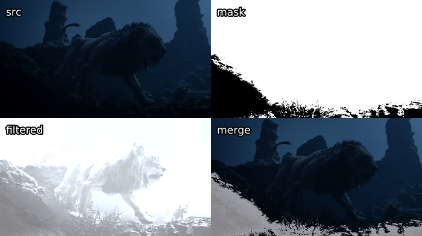
Simple binarize masks on luma are very straightforward and often do a good job of limiting a filter to the desired area, especially as dark areas are more prone to banding and blocking.
A more sophisticated version of this is adaptive_grain from earlier in
this guide. It scales values from black to white based on both the
pixel's luma value compared to the image's average luma value. A more
in-depth explanation can be found on the creator's blog. We
manipulate this mask using a luma_scaling parameter. Let's use a very
high value of 500 here:
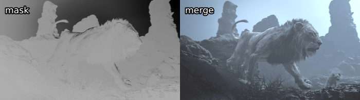
Alternatively, we can use an std.Expr to merge the clips via the
following logic:
if abs(src - filtered) <= 1000:
return filtered
elif abs(src - filtered) >= 30000:
return src
else:
return src + (src - filtered) * (30000 - abs(src - filtered)) / 29000
This is almost the exact algorithm used in mvsfunc.LimitFilter, which
GradFun3 uses to apply its bilateral filter. In VapourSynth, this
would be:
expr = core.std.Expr([src, filtered], "x y - abs 1000 > x y - abs 30000 > x x y - 30000 x y - abs - * 29000 / + x ? y ?")
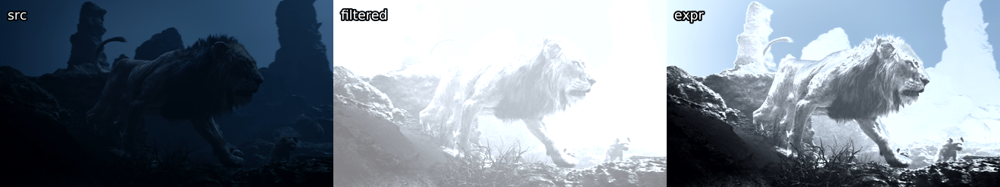
Now, let's move on to the third option: convolutions, or more interestingly for us, edge masks. Let's say you have a filter that smudges details in your clip, but you still want to apply it to detail-free areas. We can use the following convolutions to locate horizontal and vertical edges in the image:
\[\begin{aligned} &\begin{bmatrix} 1 & 0 & -1 \\ 2 & 0 & -2 \\ 1 & 0 & -1 \end{bmatrix} &\begin{bmatrix} 1 & 2 & 1 \\ 0 & 0 & 0 \\ -1 & -2 & -1 \end{bmatrix}\end{aligned}\]
Combining these two is what is commonly referred to as a Sobel-type edge mask. It produces the following for our image of the lion:
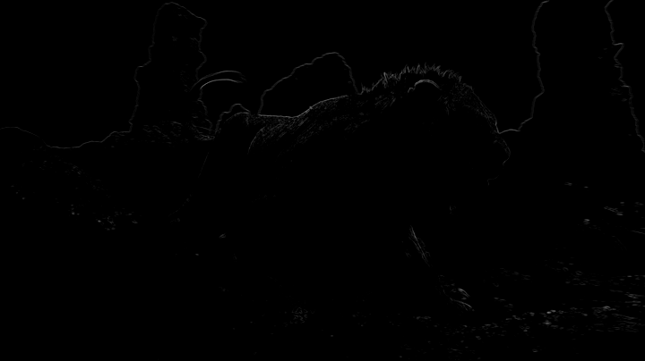
Now, this result is obviously rather boring. One can see a rough outline
of the background and the top of the lion, but not much more can be made
out.
To change this, let's introduce some new functions:
-
std.Maximum/Minimum: Use this to grow or shrink your mask, you may additionally want to applycoordinates=[0, 1, 2, 3, 4, 5, 6, 7]with whatever numbers work for you in order to specify weights of the surrounding pixels. -
std.Inflate/Deflate: Similar to the previous functions, but instead of applying the maximum of pixels, it merges them, which gets you a slight blur of edges. Useful at the end of most masks so you get a slight transition between masked areas.
We can combine these with the std.Binarize function from before to get
a nifty output:
mask = y.std.Sobel()
binarize = mask.std.Binarize(3000)
maximum = binarize.std.Maximum().std.Maximum()
inflate = maximum.std.Inflate().std.Inflate().std.Inflate()
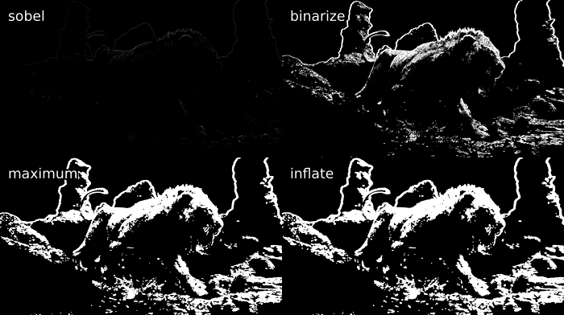
A common example of a filter that might smudge the output is an anti-aliasing or a debanding filter. In the case of an anti-aliasing filter, we apply the filter via the mask to the source, while in the case of the debander, we apply the source via the mask to the filtered source:
mask = y.std.Sobel()
aa = taa.TAAmbk(src, aatype=3, mtype=0)
merge = core.std.MaskedMerge(src, aa, mask)
deband = src.f3kdb.Deband()
merge = core.std.MaskedMerge(deband, src, mask)
We can also use a different edge mask, namely kgf.retinex_edgemask,
which raises contrast in dark areas and creates a second edge mask using
the output of that, then merges it with the edge mask produced using the
untouched image:
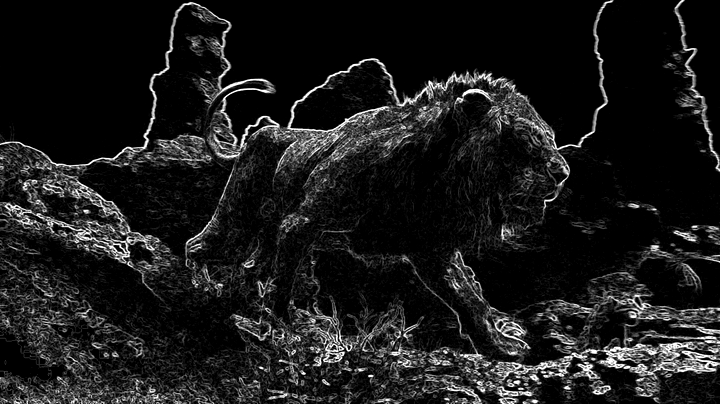
This already looks great. Let's manipulate it similarly to before and see how it affects a destructive deband in the twig area at the bottom:
deband = src.f3kdb.Deband(y=150, cb=150, cr=150, grainy=0, grainc=0)
mask = kgf.retinex_edgemask(src).std.Binarize(8000).std.Maximum()
merge = core.std.MaskedMerge(deband, src, mask)
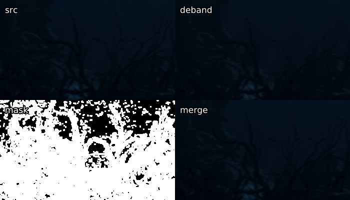
While some details remain smudged, we've successfully recovered a very noticeable portion of the twigs. Another example of a deband suffering from detail loss without an edge mask can be found under figure 35 in the appendix.
Other noteworthy edge masks easily available in VapourSynth include:
-
std.Prewittis similar to Sobel. It's the same operator with the 2 switched out for a 1. -
tcanny.TCannyis basically a Sobel mask thrown over a blurred clip. -
kgf.kirschwill generate almost identical results toretinex_edgemaskin bright scenes, as it's one of its components. Slower than the others, as it uses more directions, but will get you great results.
Some edge mask comparisons can be found in the appendix under figures 26{reference-type="ref" reference="fig:16"}, 30{reference-type="ref" reference="fig:10"} and 34{reference-type="ref" reference="fig:23"}.
As a debanding alternative to edge masks, we can also use "range"
masks, which employ std.Minimum and std.Maximum to locate details.
The most well known example of this is the mask inside GradFun3. This
works as follows:
Then, two clips are created, one which will employ std.Maximum, while
the other obviously will use std.Minimum. These use special
coordinates depending on the mrad value given. If
\(\mathtt{mrad} \mod 3 = 1\), [0, 1, 0, 1, 1, 0, 1, 0] will be used as
coordinates. Otherwise, [1, 1, 1, 1, 1, 1, 1, 1] is used. Then, this
process is repeated with \(\mathtt{mrad} = \mathtt{mrad} - 1\) until
$\mathtt{mrad} = 0$. This all probably sounds a bit overwhelming, but
it's really just finding the maximum and minimum values for each pixel
neighborhood.
Once these are calculated, the minimized mask is subtracted from the
maximized mask, and the mask is complete. So, let's look at the output
compared to the modified retinex_edgemask from earlier:
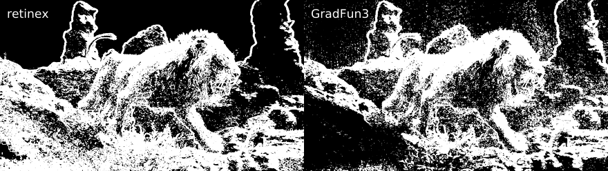
Here, we get some more pixels picked up by the GradFun3 mask in the
skies and some brighter flat textures. However, the retinex-type edge
mask prevails in darker, more detailed areas. Computationally, our
detail mask is a lot quicker, however, and it does pick up a lot of what
we want, so it's not a bad choice.
Fortunately for us, this isn't the end of these kinds of masks. There
are two notable masks based on this concept: debandmask and
lvsfunc.denoise.detail_mask. The former takes our GradFun3 mask and
binarizes it according to the input luma's brightness. Four parameters
play a role in this process: lo, hi, lothr, and hithr. Values
below lo are binarized according to lothr, values above hi are
binarized according to hithr, and values in between are binarized
according to a linear scaling between the two thresholds:
\[\frac{\mathtt{mask} - \mathtt{lo}}{\mathtt{hi} - \mathtt{lo}} \times (\mathtt{hithr} - \mathtt{lothr}) + \mathtt{lothr}\]
This makes it more useful in our specific scenario, as the mask becomes
stronger in darks compared to GradFun3. When playing around with the
parameters, we can e.. lower lo so we our very dark areas aren't
affected too badly, lower lothr to make it stronger in these darks,
raise hi to enlarge our lo to hi gap, and raise hithr to weaken
it in brights. Simple values might be
lo=22 << 8, lothr=250, hi=48 << 8, hithr=500:
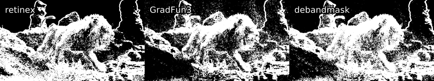
While not perfect, as this is a tough scene, and parameters might not be optimal, the difference in darks is obvious, and less banding is picked up in the background's banding.
Our other option for an altered GradFun3 is lvf.denoise.detail_mask.
This mask combines the previous idea of the GradFun3 mask with a
Prewitt-type edge mask.
First, two denoised clips are created using KNLMeansCL, one with half
the other's denoise strength. The stronger one has a GradFun3-type
mask applied, which is then binarized, while the latter has a Prewitt
edge mask applied, which again is binarized. The two are then combined
so the former mask gets any edges it may have missed from the latter
mask.
The output is then put through two calls of RemoveGrain, the first one
setting each pixel to the nearest value of its four surrounding pixel
pairs' (e.. top and bottom surrounding pixels make up one pair) highest
and lowest average value. The second call effectively performs the
following convolution:
\[\begin{bmatrix}
1 & 2 & 1 \\
2 & 4 & 2 \\
1 & 2 & 1
\end{bmatrix}\]
By default, the denoiser is turned off, but this is one of its
advantages for us in this case, as we'd like the sky to have fewer
pixels picked up while we'd prefer more of the rest of the image to be
picked up. To compare, I've used a binarize threshold similar to the one
used in the debandmask example. Keep in mind this is a newer mask, so
my inexperience with it might show to those who have played around with
it more:
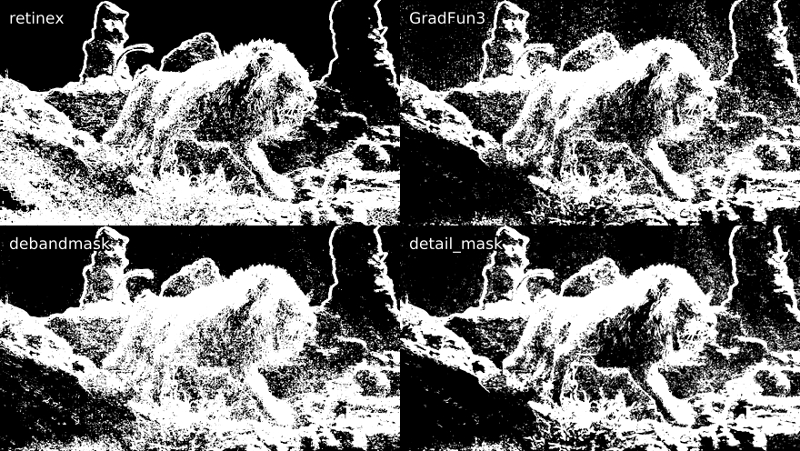
Although an improvement in some areas, in this case, we aren't quite getting the step up we would like. Again, better optimized parameters might have helped.
In case someone wants to play around with the image used here, it's available in this guide's repository: https://git.concertos.live/Encode_Guide/mdbook-guide/src/branch/master/src/filtering/Pictures/lion.png.
{kind=link}
Additionally, the following functions can be of help when masking, limiting et cetera:
-
std.MakeDiffandstd.MergeDiff: These should be self-explanatory. Use cases can be applying something to a degrained clip and then merging the clip back, as was elaborated in the Denoising section. -
std.Transpose: Transpose (i.. flip) your clip. -
std.Turn180: Turns by 180 degrees. -
std.BlankClip: Just a frame of a solid color. You can use this to replace bad backgrounds or for cases where you've added grain to an entire movie but you don't want the end credits to be full of grain. To maintain TV range, you can usestd.BlankClip(src, color=[16, 128, 128]) for 8-bit black. Also useful for making area based masks. -
std.Invert: Self-explanatory. You can also just swap which clip gets merged via the mask instead of doing this. -
std.Limiter: You can use this to limit pixels to certain values. Useful for maintaining TV range (std.Limiter(min=16, max=235)). -
std.Median: This replaces each pixel with the median value in its neighborhood. Mostly useless. -
std.StackHorizontal/std.StackVertical: Stack clips on top of/next to each other. -
std.Merge: This lets you merge two clips with given weights. A weight of 0 will return the first clip, while 1 will return the second. The first thing you give it is a list of clips, and the second item is a list of weights for each plane. Here's how to merge chroma from the second clip into luma from the first:std.Merge([first, second], [0, 1]). If no third value is given, the second one is copied for the third plane. -
std.ShufflePlanes: Extract or merge planes from a clip. For example, you can get the luma plane withstd.ShufflePlanes(src, 0, vs.GRAY).
If you want to apply something to only a certain area, you can use the
wrapper rekt or rekt_fast. The latter only applies you function
to the given area, which speeds it up and is quite useful for
anti-aliasing and similar slow filters. Some wrappers around this exist
already, like rektaa for anti-aliasing. Functions in rekt_fast are
applied via a lambda function, so instead of src.f3kdb.Deband(), you
input rekt_fast(src, lambda x: x.f3kdb.Deband()).
One more very special function is std.FrameEval. What this allows you
to do is evaluate every frame of a clip and apply a frame-specific
function. This is quite confusing, but there are some nice examples in
VapourSynth's documentation:
http://www.vapoursynth.com/doc/functions/frameeval.html. Now, unless
you're interested in writing a function that requires this, you likely
won't ever use it. However, many functions use it, including
kgf.adaptive_grain, awf.FrameInfo, fvf.AutoDeblock, TAAmbk, and
many more. One example I can think of to showcase this is applying a
different debander depending on frame type:
import functools
def FrameTypeDeband(n, f, clip):
if clip.props['_PictType'].decode() == "B":
return core.f3kdb.Deband(clip, y=64, cr=0, cb=0, grainy=64, grainc=0, keep_tv_range=True, dynamic_grain=False)
elif clip.props['_PictType'].decode() == "P":
return core.f3kdb.Deband(clip, y=48, cr=0, cb=0, grainy=64, grainc=0, keep_tv_range=True, dynamic_grain=False)
else:
return core.f3kdb.Deband(clip, y=32, cr=0, cb=0, grainy=64, grainc=0, keep_tv_range=True, dynamic_grain=False)
out = core.std.FrameEval(src, functools.partial(FrameTypeDeband, clip=src), src)
If you'd like to learn more, I'd suggest reading through the Irrational Encoding Wizardry GitHub group's guide: https://guide.encode.moe/encoding/masking-limiting-etc.html and reading through most of your favorite Python functions for VapourSynth. Pretty much all of the good ones should use some mask or have developed their own mask for their specific use case.
Edge detection is also very thoroughly explained in a lot of digital image processing textbooks, e.g. Digital Image Processing by Gonzalez and Woods.
HQDeringmod
Sharpening
DeHalo_alpha
old function explanation
`DeHalo_alpha` works by downscaling the source according to `rx` and `ry` with a mitchell bicubic ($b=\nicefrac{1}{3},\ c=\nicefrac{1}{3}$) kernel, scaling back to source resolution with blurred bicubic, and checking the difference between a minimum and maximum (check [3.2.14](#masking){reference-type="ref" reference="masking"} if you don't know what this means) for both the source and resized clip. The result is then evaluated to a mask according to the following expressions, where $y$ is the maximum and minimum call that works on the source, $x$ is the resized source with maximum and minimum, and everything is scaled to 8-bit: $$\texttt{mask} = \frac{y - x}{y + 0.0001} \times \left[255 - \texttt{lowsens} \times \left(\frac{y + 256}{512} + \frac{\texttt{highsens}}{100}\right)\right]$$ This mask is used to merge the source back into the resized source. Now, the smaller value of each pixel is taken for a lanczos resize to $(\texttt{height} \times \texttt{ss})\times(\texttt{width} \times \texttt{ss})$ of the source and a maximum of the merged clip resized to the same resolution with a mitchell kernel. The result of this is evaluated along with the minimum of the merged clip resized to the aforementioned resolution with a mitchell kernel to find the minimum of each pixel in these two clips. This is then resized to the original resolution via a lanczos resize, and the result is merged into the source via the following:if original < processed
x - (x - y) * darkstr
else
x - (x - y) * brightstr
Masking
Denoising
BM3D
KNLMeansCL
SMDegrain
Grain Dampening
STPresso
Dehardsubbing
hardsubmask
hardsubmask_fades
Delogoing
DeLogoHD
首先，您需要选择视频文件的一个较小区域作为参考，因为对整个内容进行测试将花费很长时间。
推荐的方法是使用 awsmfunc里的SelectRangeEvery:
import awsmfunc as awf
out = awf.SelectRangeEvery(clip, every=15000, length=250, offset=[1000, 5000])
这里，第一个数字是节之间的偏移量，第二个数字是每个节的长度，偏移数组是从开始到结束的偏移量。
您需要使用相当长的剪辑（通常为几千帧），其中包括黑暗、明亮、静态和动作场景， 但是，它们的分布应该与它们在整个视频中的分布大致相同。
在测试设置时，您应该始终使用 2-pass 编码，因为许多设置会显着改变 CRF 为您提供的比特率。 对于最终编码，两者都很好，尽管 CRF 更快。
要找出最佳设置，请将它们相互对比并与源进行比较。 你可以单独这样做，或者在`awsmfunc'文件夹中交错排列一个文件夹。你通常也想给它们贴上标签，这样你就可以让你真正知道你在看哪个片段。
# Load the files before this
src = awf.FrameInfo(src, "Source")
test1 = awf.FrameInfo(test1, "Test 1")
test2 = awf.FrameInfo(test2, "Test 2")
out = core.std.Interleave([src, test1, test2])
# You can also place them all in the same folder and do
src = awf.FrameInfo(src, "Source")
folder = "/path/to/settings_folder"
out = awf.InterleaveDir(src, folder, PrintInfo=True, first=extract, repeat=True)
如果你使用yuuno，你可以使用下面的iPython魔法来获得 悬停在预览屏幕上，使预览在两个源之间切换
屏幕。
%vspreview --diff
clip_A = core.ffms2.Source("settings/crf/17.0")
clip_A.set_output()
clip_B = core.ffms2.Source("settings/crf/17.5")
clip_B.set_output(1)
通常情况下，你会想先测试一下比特率。只要在几个不同的CRF下进行编码，并与源文件进行比较，找到与源文件无法区分的最高CRF值。 现在，对数值进行四舍五入，最好是向下，并切换到2-pass。对于标准测试，测试qcomp（间隔为0.05），大内部的aq强度的aq模式（例如，对于一个aq模式做测试，aq强度从0.6到1.0，间隔为0.2），aq强度（间隔为0.05），merange（32，48和64），psy-rd（间隔为0.05），ipratio/bratio（间隔为0.05，距离保持为0.10），然后deblock（间隔为1）。 如果你认为 mbtree 有所帮助（即你正在对动画进行编码），请在打开 mbtree 的情况下重做这个过程。你可能不会想怎么改变顺序，但肯定可以这样做。
对于x265，顺序应该是qcomp、aq-mode、aq-strength、psy-rd、psy-rdoq、ipratio和pbratio，然后是deblock。
如果你想要一点额外的效率，你可以在你最终决定的每个设置的数值周围用较小的间隔再次进行测试。建议在你已经对每个设置做了一次测试之后再做，因为它们确实对彼此都有轻微的影响。
一旦你完成了用2-pass的测试设置，就切换回CRF，并重复寻找最高透明CRF值的过程。
DXVA
-
--level 4.1 -
--vbv-bufsize 78125 --vbv-maxrate 62500for DXVA (The old guide used lower values to account for the possibility of writing the encode to BD for playback, this is no longer a consideration as other settings break this compatibility. The new values are the max level 4.1 can do, if your device breaks because of this the encode is not at fault, your device doesn't meet DXVA spec).
General settings
-
--b-adapt 2uses the best algorithm (that x264 has) to decide how B frames are placed. -
--min-keyintshould typically be the frame rate of your video, e.g. if you were encoding 23.976 fps content, then you use 24. This is setting the minimum distance between I-frames. -
--rc-lookahead 250if using mbtree, 60 or higher else. This sets how many frames ahead x264 can look, which is critical for mbtree. You need lots of memory for this. (Personally I just leave this at 250 now as the impact on memory usage is 2 GB or so.) Definitely lower this if you're encoding without mbtree and have a lot of ReplaceFramesSimple calls in your script. -
--me umhis the lowest you should go. If your CPU is fast enough, you might endure the slowdown from tesa. esa takes as much time as tesa without any benefit, so if you want to slow down your encode to try and catch more movement vectors, just use tesa, although the increase is not necessarily always worth it. This isn't really a setting you need to test, but on tough sources, you might squeeze some more performance out of x264 if you use tesa. -
--direct autowill automatically choose the prediction mode (spatial/temporal) -
--subme 10or11(personally I just set this to 11 the difference in encode speed is within 3-4%) -
--trellis 2 -
--no-dct-decimatedct-decimate is a speed up that sacrifices quality. Just leave it off, since your computers can likely handle it. -
--no-fast-pskipSimilar to the above. -
--preset verysloworplacebo, although the stuff we're changing will make veryslow be placebo, anyway.
Source-specific settings
-
--bitrate/--crfBitrate is in Kbps (Kilobits per second) and CRF takes a float, where lower is better quality. This is the most important setting you have; bitstarve an encode and it is guaranteed to look like crap. Use too many bits and you've got bloat (and if people wanted to download massive files, they would get a remux). Of course, the bitrate need can vary drastically depending on the source. -
--deblock -3:-3to0:0. For live action, most people just stick with -3:-3. For anime, values between -3:-2 and 0:0 are common. An explanation of the two params can be found HERE. -
--qcomp 0.6(default) to0.8might prove useful. Don't set this too high or too low, or the overall quality of your encode will suffer. This setting has a heavy effect on mbtree. A higher qcomp value will make mbtree weaker, hence something around 0.80 is usually optimal for anime.--qcomp 0will cause a constant bitrate, while--qcomp 1will cause a constant quantizer. -
--aq-mode 1to3: 1 distributes bits on a per frame basis, 2 tends to allocate more bits to the foreground and can distribute bits in a small range of frames, 3 is a modified version of 2 that attempts to allocate more bits to dark parts of the frames. The only way to know what's best for sure it to test. Almost every source ends up looking best with aq-mode 3, however. -
--aq-strength 0.5to1.3are worth trying. Higher values might help with blocking. Lower values will tend to allocate more bits to the foreground, similar to aq-mode 2. Lower values allocate more bits to flat areas, while higher values allocate more to "detailed" areas. Note that x264 considers grain and noise as detail, so you can think of this setting as the ratio of bits allocated to edges vs. bits allocated to grain. You're usually going to want to have a higher qcomp for a lower aq-strength and vice versa. With mode 3, you're usually going to end up somewhere around the 0.7-0.8 range for modern film, for which a qcomp of 0.6-0.7 often works best. -
--merange 24(the lowest that should ever be used) to64, setting this too high can hurt (more than 128), 32 or 48 will be fine for most encodes. In general, 32-48 for 1080p and 32 for 720p (when using umh) for movies with lots of motion this can help (e.g. action movies). Talking heads can get away with low values like 24. The impact on encode speed is noticeable but not horrible. I prefer to use 48 for 1080p and 32 for 720p when using umh or 32 for 1080p and 32 for 720p when using tesa. -
--no-mbtreeI highly recommend testing with both mbtree enabled and disabled, as generally it will result in two very different encodes. mbtree basically attempts to degrade the quality of blocks rather than frames, so that only the unimportant parts of a frame get less bits. To do this, it needs to know how often a block is referenced later, which is why--rc-lookaheadshould be set to 250. Useful for things with static backgrounds, like anime. Or for things where you've used a high qcomp (.75 or above) and mbtree will have a lowered impact. When testing whether this is a decent option, you'll likely have to retest every setting, especially qcomp, psy-rd, and ipratio. -
--ipratio 1.15to1.40, with 1.30 usually being the go-to option. This is the bitrate allocation ratio between I and P frames. -
--pbratio 1.05to1.30, with 1.20 being the usual go-to. This is the bitrate allocation ratio between P and B frames. This value should always be around 0.10 lower than --ipratio, so lower it while testing ipratio. If you're using mbtree, this setting will have no affect, as mbtree determines it itself. -
--psy-rd 0.40:0 to 1.15:0: 0.95:0 to 1.15:0 for live action. The first number is psy-rd strength, second is psy-trellis strength. This tries to keep x264 from making things blurry and instead keep the complexity. For anime, between 0.40 and 1.00:0.00 is the usual range. Psy-trellis usually introduces a lot of ringing, but can help with maintaining dither. You can try values between 0.00 and 0.15 for live action and try values up to 0.50 for anime, although you'll usually get better results if you raise your aq-strength instead. -
--bframes 6to16, This is setting the maximum amount of consecutive P frames that can be replaced with B frames. Test with 16 for your first test run, and set according to the x264 log:x264 [info]: consecutive B-frames: 1.0% 0.0% 0.0% 0.0% 14.9% 23.8% 13.9% 15.8% 8.9% 9.9% 0.0% 11.9% 0.0% 0.0% 0.0% 0.0% 0.0%Start counting with the first percentage as 0 and choose the highest number with more than 1%, which is 11 in this example.
Or just leave this at 16, as allowing more bframes will not harm your encode and will aid in compression; the impact on speed isn't that enormous.
-
--ref 16if you don't care about hardware compatibility, else just leave this option out and x264 will determine the correct number according to your level. This sets the number of previous frames each P frame can use as references. The impact on performance is quite high, but it's worth it most of the time. -
--zonesis quite useful for debanding and blocking, as these areas require a larger bitrate to maintain transparency. The syntax is
--zones 0,100,crf=10/101,200,crf=15or
--zones 0,100,b=5/101,200,b=10withbbeing a bitrate multiplier in this case. You can also use this for areas that don't get enough bits allocated. Especially common areas are darker scenes or scenes with lots of reds. Fades can also suffer from bitstarving and require zoning. One can also lower the bitrate during credits to save that little something. -
--output-depth 8or10depending on what you're encoding in. -
--output-csp i444if you're encoding 4:4:4, else leave this out.
The documentation here is very good, so I'll just go over recommended values:
Source-independent settings
-
--preset verysloworslower -
--no-rectfor slower computers. There's a slight chance it'll prove useful, but it probably isn't worth it. -
--no-ampis similar torect, although it seems to be slightly more useful. -
--no-open-gop -
--no-cutreesince this seems to be a poor implementation ofmbtree. -
--no-rskiprskipis a speed up that gives up some quality, so it's worth considering with bad CPUs. -
--ctu 64 -
--min-cu-size 8 -
--rdoq-level 2 -
--max-merge 5 -
--rc-lookahead 60although it's irrelevant as long as it's larger than min-keyint -
--ref 6for good CPUs, something like4for worse ones. -
--bframes 16or whatever your final bframes log output says. -
--rd 3or4(they're currently the same). If you can endure the slowdown, you can use6, too, which allows you to test--rd-refine. -
--subme 5. You can also change this to7, but this is known to sharpen. -
--merange 57just don't go below32and you should be fine. -
--high-tier -
--range limited -
--aud -
--repeat-headers
Source-dependent settings
-
--output-depth 10for 10-bit output. -
--input-depth 10for 10-bit input. -
--colorprim 9for HDR,1for SDR. -
--colormatrix 9for HDR,1for SDR. -
--transfer 16for HDR,1for SDR. -
--hdr10for HDR. -
--hdr10-optfor 4:2:0 HDR,--no-hdr10-optfor 4:4:4 HDR and SDR. -
--dhdr10-info /path/to/metadata.jsonfor HDR10+ content with metadata extracted using hdr10plus_parser.
-
--dolby-vision-profile 8.1specified Dolby Vision profile. x265 can encode only to profiles5,8.1, and8.2 -
--dolby-vision-rpu /path/to/rpu.binfor Dolby Vision metadata extracted using dovi_tool. -
--master-display "G(8500,39850)B(6550,2300)R(35400,14600)WP(15635,16450)L(10000000,20)"for BT.2020 or
G(13250,34500)B(7500,3000)R(34000,16000)WP(15635,16450)L(10000000,1)for Display P3 mastering display color primaries with the values for L coming from your source's MediaInfo for mastering display luminance.For example, if your source MediaInfo reads:
Mastering display color primaries : BT.2020 Mastering display luminance : min: 0.0000 cd/m2, max: 1000 cd/m2 Maximum Content Light Level : 711 cd/m2 Maximum Frame-Average Light Level : 617 cd/m2This means you set
"G(8500,39850)B(6550,2300)R(35400,14600)WP(15635,16450)L(10000000,0)" -
--max-cll "711,617"from your source's MediaInfo for maximum content light level and maximum frame-average light level. The values here are from the above example. -
--cbqpoffsand--crqpoffsshould usually be between -3 and 0 for 4:2:0. For 4:4:4, set this to something between 3 and 6. This sets an offset between the bitrate applied to the luma and the chroma planes. -
--qcompbetween0.60and0.80. -
--aq-mode 4,3,2,1, or--hevc-aqwith4and3usually being the two best options. These do the following-
Standard adaptive quantization, simply add more bits to complex blocks.
-
Adaptive quantization with auto-variance.
-
Adaptive quantization with auto-variance and bias to dark scene.
-
Adaptive quantization with auto-variance and better edge preservation.
-
hevc-aq"scales the quantization step size according to the spatial activity of one coding unit relative to frame average spatial activity. This AQ method utilizes the minimum variance of sub-unit in each coding unit to represent the coding unit's spatial complexity." Like most of the x265 documentation, this sounds a lot fancier than it is. Don't enable with other modes turned on.
-
-
--aq-strengthbetween0.80and1.40for AQ modes 1-3 or0.50and1.00for AQ mode 4. -
--deblock -4:-4to0:0, as with x264. You can default-3:-3with live action. -
--ipratioand--pbratiosame as x264 again. -
--psy-rd 0.80to2.00, similar-ish effect to x264. Values are generally higher than with x264, though. -
--psy-rdoqanything from0.00to2.00usually. -
--no-saois usually best, but if your encode suffers from a lot of ringing, turn SAO back on. SAO does tend to blur quite heavily. -
--no-strong-intra-smoothingon sharp/grainy content, you can leave this on for blurry content, as it's an additional blur that'll help prevent banding.
Taking Screenshots
在VapourSynth中拍摄简单的屏幕截图是非常容易的。如果你使用的是预览器，你可以用它来代替，但知道如何直接通过VapourSynth进行截图可能还是很有用的。
我们推荐使用 awsmfunc.ScreenGen.
它有两个优势:
- 保存了帧数信息，可以很容易地再次参考这些，例如，如果你想重新做你的截图。
- 它为你处理适当的转换和压缩，而有些预览器（如VSEdit）可能不是这样。
要使用 "ScreenGen"，创建一个你想要截图的新文件夹，例如 "Screenshots"，和一个名为 "screen.txt "的文件，其中包含你想要截图的帧数。, 例如：
26765
76960
82945
92742
127245
然后，在你的VapourSynth脚本的底部，写上
awf.ScreenGen(src, "Screenshots", "a")
`a'是放在帧号后面的东西。这对于保持组织性和对截图进行分类是很有用的，同时也可以防止不必要的截图被覆盖。
现在，在命令行中运行你的脚本（或在预览器中重新加载）。
python vapoursynth_script.vpy
完成! 你的截图现在应该在给定的文件夹中。
Comparing Source vs. Encode
将源码与你的编码进行比较，可以让潜在的下载者轻松判断你的编码质量。
当采取这些时，重要的是包括你要比较的框架类型，例如比较两个I'框架将导致极其有利的结果。 你可以使用awsmfunc.FrameInfo`来做这个。
src = awf.FrameInfo(src, "Source")
encode = awf.FrameInfo(encode, "Encode")
如果你想在你的预览器中比较这些，建议将它们交错排列。
out = core.std.Interleave([src, encode])
然而，如果你是用ScreenGen进行截图，不这样做更容易，只需运行两个ScreenGen调用。
src = awf.FrameInfo(src, "Source")
awf.ScreenGen(src, "Screenshots", "a")
encode = awf.FrameInfo(encode, "Encode")
awf.ScreenGen(encode, "Screenshots", "b")
注意，在编码的ScreenGen中，"a"被替换成了"b"。
这将允许你按名字对文件夹进行排序，并且每张源截图后面都有一个编码截图，使上传更容易。
HDR comparisons
对于比较HDR源和HDR编码，建议使用色调图。 这个过程是破坏性的，但你仍然能够分辨出哪些地方被扭曲了，哪些地方被平滑了等等。
为此推荐的函数是awsmfunc.DynamicTonemap:
src = awf.DynamicTonemap(src, src_fmt=False, libplacebo=False)
encode = awf.DynamicTonemap(encode, src_fmt=False, libplacebo=False)
注意，我们在这里禁用了src_fmt和libplacebo。
将前者设置为True会输出10位4:2:0，这是次优的，因为屏幕截图通常是以8位RGB（没有色度子采样）呈现。
后者被推荐用于比较，因为使用libplacebo会使你的色调图在亮度上更有可能不同，使比较更加困难。
Choosing frames
在进行截图时，重要的是不要让你的编码看起来有欺骗性的透明。 要做到这一点，你需要确保你截图的是适当的框架类型，以及内容上不同的框架。
幸运的是，这里没有太多需要记住的东西:
- 你的编码的截图应该永远是B类型帧。
- 你的源的截图不应该是I类型帧。
- 你的比较应该包括黑暗场景、明亮场景、特写镜头、远景镜头、静态场景、高度动作场景，以及你在这两者之间的任何内容。
Comparing Different Sources
当比较不同的来源时，你应该进行类似于比较来源与编码的工作。 然而，你可能会遇到不同的裁剪、分辨率或色调，所有这些都会妨碍比较的进行。
对于不同的裁剪，只需将边框加回去:
src_b = src_b.std.AddBorders(left=X, right=Y, top=Z, bottom=A)
如果这样做会导致图像内容的偏移，你应该调整大小为4:4:4，这样你就可以添加不均匀的边框。 例如，如果你想在顶部和底部添加1像素高的黑条:
src_b = src_b.resize.Spline36(format=vs.YUV444P8, dither_type="error_diffusion")
src_b = src_b.std.AddBorders(top=1, bottom=1)
对于不同的分辨率，建议使用一个简单的花键调整大小:
src_b = src_b.resize.Spline36(src_a.width, src_a.height, dither_type="error_diffusion")
如果一个源是HDR，另一个是SDR，你可以使用awsmfunc.DynamicTonemap:
src_b = awf.DynamicTonemap(src_b, src_fmt=False)
关于不同的色调，请参考色调篇.
如果你的去带片段与没有带子的部分相比颗粒很小，你应该考虑使用一个单独的函数来添加匹配的颗粒，这样场景就更容易融合在一起。如果有很多颗粒，你可能要考虑adptvgrnMod、adaptive_grain或GrainFactory3；对于不那么明显的颗粒，或者只是对于通常会有很少颗粒的明亮场景，你也可以使用grain.Add。颗粒器的主题将在后面的粒化部分中进一步阐述。
下面是Mirai的一个例子:

Black & White Clips: Working in GRAY
由于YUV格式将luma保存在一个单独的平面内，在处理黑白电影时，我们会变得更加轻松，因为我们可以提取luma平面并只在该平面上工作。
y = src.std.ShufflePlanes(0, vs.GRAY)
vsutil中的get_y函数做了同样的事情。
有了我们的y片段，我们可以执行没有mod2限制的功能。
例如，我们可以进行奇数裁剪:
crop = y.std.Crop(left=1)
此外，由于滤镜只应用在一个平面上，这可以加快我们的脚本速度。
我们也不必担心像f3kdb这样的滤镜会以不需要的方式改变我们的色度平面，例如使它们产生颗粒。
然而，当我们完成我们的剪辑后，我们通常想把剪辑导出为YUV。 这里有两个选项:
1. 使用假色度
使用假的色度是快速和简单的，其优点是在源中任何意外的色度偏移（例如色度颗粒）将被删除。 所有这一切都需要恒定的色度（意味着没有色调变化）和mod2 luma。
最简单的选项是u = v = 128（8位）:
out = y.resize.Point(format=vs.YUV420P8)
如果你有一个不均匀的luma，只需用awsmfunc.fb来填充它。
假设你想对左边进行填充:
y = core.std.StackHorizontal([y.std.BlankClip(width=1), y])
y = awf.fb(y, left=1)
out = y.resize.Point(format=vs.YUV420P8)
另外，如果你的源的色度不是中性灰色，可以使用std.BlankClip:
blank = y.std.BlankClip(color=[0, 132, 124])
out = core.std.ShufflePlanes([y, blank], [0, 1, 2], vs.YUV)
2. 使用原始色度（必要时调整大小）
这样做的好处是，如果有实际重要的色度信息（例如轻微的棕褐色色调），这将被保留下来。
只要在你的素材上使用ShufflePlanes就可以了:
out = core.std.ShufflePlanes([y, src], [0, 1, 2], vs.YUV)
然而，如果你已经调整了尺寸或裁剪，这就变得有点困难了。 你可能必须适当地移动或调整色度（见色度重采样章节的解释）。
如果你已经裁剪了，就提取并相应地移位。我们将使用vsutil的split和join来提取和合并平面:
y, u, v = split(src)
crop_left = 1
y = y.std.Crop(left=crop_left)
u = u.resize.Spline36(src_left=crop_left / 2)
v = v.resize.Spline36(src_left=crop_left / 2)
out = join([y, u, v])
如果你已经调整了尺寸，你需要转移和调整色度的大小:
y, u, v = split(src)
w, h = 1280, 720
y = y.resize.Spline36(w, h)
u = u.resize.Spline36(w / 2, h / 2, src_left=.25 - .25 * src.width / w)
v = v.resize.Spline36(w / 2, h / 2, src_left=.25 - .25 * src.width / w)
out = join([y, u, v])
结合裁剪和移位，据此我们垫高裁剪并使用awsmfunc.fb来创建一个假线:
y, u, v = split(src)
w, h = 1280, 720
crop_left, crop_bottom = 1, 1
y = y.std.Crop(left=crop_left, bottom=crop_bottom)
y = y.resize.Spline36(w - 1, h - 1)
y = core.std.StackHorizontal([y.std.BlankClip(width=1), y])
y = awf.fb(left=1)
u = u.resize.Spline36(w / 2, h / 2, src_left=crop_left / 2 + (.25 - .25 * src.width / w), src_height=u.height - crop_bottom / 2)
v = v.resize.Spline36(w / 2, h / 2, src_left=crop_left / 2 + (.25 - .25 * src.width / w), src_height=u.height - crop_bottom / 2)
out = join([y, u, v])
如果你不明白这里到底发生了什么，遇到这样的情况，请向更有经验的人求助。